|
|
|
|
|
|
Трубицын В. Теория игровых структур
Художественное оформление автора.
Оглавление
Геометрический гербарий: новый взгляд на старые истины Введение Гл. 1 Общая классификация и свойства игровых структур Гл. 2 Точечные структурообразующие элементы и структуры Гл. 3 Линейные двумерные структурообразующие элементы и структуры Гл. 4 Линейные трёхмерные структурообразующие элементы и структуры Гл. 5 Плоскофигурные структурообразующие элементы и структуры Гл. 6 Экзофигуры и экзотела в роли структурообразующих элементов плоскофигурных и объёмных структур Гл. 7 Трёхмерные структурообразующие элементы и структуры Гл. 8 Периодическая таблица пространственных структурообразующих элементов Гл. 9 Геометрия игрового пространства Гл. 10 Внеструктурное игровое поле Гл. 11 Шашечные игровые структуры Заключение Условные сокращения и формулы (Приложение 1) Таблицы
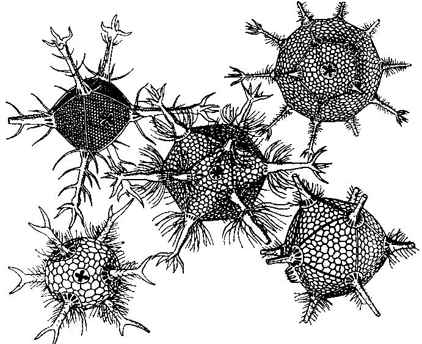
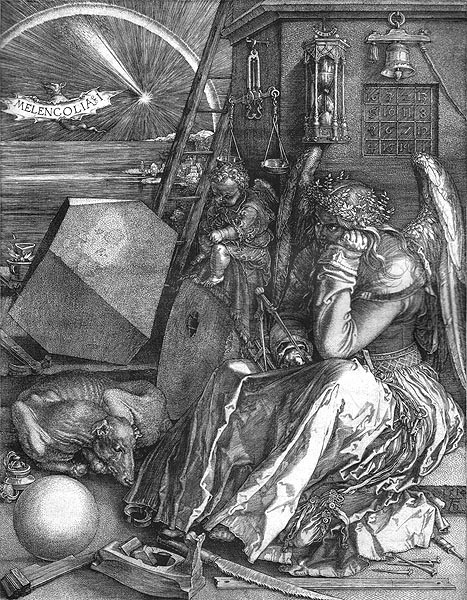 А. Дюрер. Меланхолия. Гравюра на меди. 1514.
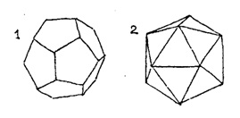 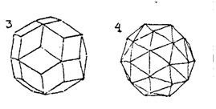 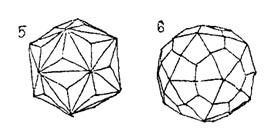 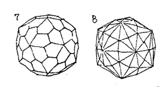
НЕ ГЕОМЕТР – ДА НЕ ВОЙДЁТ! (Надпись на входе в платоновскую академию). "Самое поразительное в нашей науке – это то, что она возвращается к пифагореизму." Бертран Рассел
"Каждый из нас – лишь человек, лишь попытка, лишь нечто куда-то движущееся. Но двигаться он должен туда, где находится совершенство." Герман Хессе (Hermann Hesse), "Игра в бисер."
"Можно мыслить понятиями и словами – а можно кубами, шарами и даже мирами" Олег Григорьев
"Если ты не отличаешь бесконечногранник от шара, то как ты отличишь совершенную тетрарадиолярию от тетраэдра?" Джек Сон ГЕОМЕТРИЧЕСКИЙ ГЕРБАРИЙ: НОВЫЙ ВЗГЛЯД НА СТАРЫЕ ИСТИНЫ Основным методом исследования в настоящей работе является разработанный автором структурный анализ игровых пространств. Роль настольных комбинационных игр в развитии человеческого интеллекта давно известна, однако уровень независимых исследований в этой сфере, по мнению автора, оставляет желать много лучшего. В результате мы лишь частично используем заложенный в них потенциал во многих аспектах – в том числе и для создания перспективных познавательных технологий. Что же даёт нам предлагаемый автором подход, состоящий на первый взгляд всего лишь в обобщении давно известных фактов одного из разделов планиметрии о комбинаторно-различимых разбиениях пространства? Вполне очевидно, что содержание работы отнюдь не сводится к простому перечню возрастающих по сложности и мерности пространственных структур, хотя и такой материал информативен. Автор идёт дальше – к анализу внеструктурного игрового поля, которое по сути ничем не отличается от библейской Бездны ("И была мгла..."). То есть от реального физического пространства. Насколько нам известно, ничего похожего ни в научной, ни в популярной литературе нет. В структурированной же части своего вовсе не такого уж "игрушечного" мироздания автор обнаруживает глубокие внутренние связи, так или иначе уже известные специалистам, изучающим различные категории структур вещества вплоть до макрообъектов, но в рамках игротехники приобретающие свою специфику. И этого следовало ожидать, потому что автор в итоге обратился к наиболее общим свойствам структурированного мира. Как оказалось, свойства игровых структур во многом формируются свойствами их структурообразующих элементов. В свою очередь указанные структуры способны транслировать свои «зародышевые» признаки на характер происходящих в структурах процессов (в данном случае – как на формирование свойств субъектов игры, то есть игровых фигур, так и на характер самой игры). Это напоминает фантастический принцип таблицы Д.И. Менделеева, в которой свойства химических элементов зависят не от волшебства, а как теперь уже ясно – от количества электронов в атоме. (И, разумеется, от определённых геометрических свойств вещества на микроуровне). Автор работы убеждён в том, что если тема столь глубоких структурных связей в свойствах игровых пространств ранее вообще не обсуждалась, то ни о каком строгом подходе в изучении комбинационно-стратегических игр говорить не приходится. Усваивались только внешние признаки и вторичные эффекты, а не сама суть, феноменально связанная не с мистикой, а со структурным единством всего мироздания, основанном в том числе на эволюции его форм. Теперь же речь может идти о качественно новом этапе в исследовании комбинаторно-стратегических игр. Игра с наукой может стать наукой об игре. Чего сами гуманитарии предвидеть не могут по причине недостатка информации в сфере специальных игровых технологий. Но указанное сближение идей уже происходит. Что касается настоящей публикации, то надо приветствовать авторов, которые вслед за известными учеными и художниками не хотят ограничивать себя видимой оболочкой геометрического тела или другими очевидностями, а дерзко вспарывают кажущуюся истину в поисках ранее недоступной сути: новой пропорции, новой комбинации, нового объективного закона – и, в конечном счёте, новой гармонии. Даже если всё это – всего лишь игра с Геометрией, она заслуживает похвалы: играя, мы познаем мир. И надеемся изменить его в лучшую сторону. Доктор геолого-минералогических наук, профессор кафедры минералогии и петрографии Санкт-Петербургского госуд. Горного института (технического университета) А.И. Глазов Введение Настольные комбинационно-стратегические игры (НКС-игры) наряду с логическими задачами и головоломками всегда были пробным камнем для интеллекта. Но почему-то сами игры в России до сих пор выпадали из сферы непредвзятых систематических исследований как самостоятельный феномен. (Первая и последняя в России фундаментальная работа на эту тему, не лишённая тенденциозности, была опубликована Д.И. Саргиным в 1915 г). Поэтому мы и имеем на сегодня полный волюнтаризм и в описании, и в методологии использования НКС-игр. Например, новейшая шахматная энциклопедия теорией шахмат называет "совокупность знаний о шахматной игре", состоящую по сути из теории дебюта, миттельшпиля и эндшпиля – но не имеющую никакого отношения к конструкционным особенностям самой шахматной игры. (То есть по мнению ведущих шахматистов, скажем, теория автомобиля – это правила движения, а то, почему он способен передвигаться, к теории автомобиля не имеет никакого отношения). И такой подход всё ещё называется "своеобразной наукой о шахматах". Смех да и только. Вероятно, более строгой науки о шахматах в спортивном департаменте в принципе быть и не может. Поэтому многие другие нелепицы, насаждаемые рекордсменами и обслуживающей их прессой, легко становятся официальной нормой. Узкий спортивный подход к популярным комбинационным стратегическим играм наносит невосполнимый вред и самим играм, и игровому мышлению в целом, что можно проследить на примере шашек и шахмат. При всём изобилии литературы в указанной области всё ещё не выработаны, например, научные критерии в изучении процессов формирования самих игр. Отсюда – часто встречающееся непонимание истории и философии игры, её главной идеи и движущих сил. Что создаёт большой простор для произвольных истолкований важнейших параметров игры, ничем не обоснованное неприятие исследований конструктивных особенностей игры – не говоря уже о прогнозировании потенциально возможной эволюции игры. Что касается менее популярных НКС-игр, то они вообще предоставлены самим себе – в то время как существует настоятельная необходимость гораздо эффективнее использовать НКС-игры во всём их многообразии не только как средство для существования спортивной элиты. Ведь указанные игры легли в основу математической теории игр, впервые изложенной в фундаментальном труде Дж. фон Неймана и О. Моргенштерна (1953), которым удалось перевести математическое мышление из области задач о перемещении тел в сферу оперирования понятиями разумного и целесообразного. НКС-игры тесно переплетаются с проблемами изучения законов мышления, стимулирования творческих процессов. Например, без них немыслима аксиоматика военных дисциплин, политологии, экономики, новейших педагогических технологий и многого другого. Отдельной проблемой является явная недооценка нашей системой образования широкого использования факультативных учебно-воспитательных игровых программ, о чем В.Н. Белов (кандидат физико-математических наук, доцент Санкт-Петербургского политехнического университета) и автор настоящей книги сделали сообщение на Пятых Царско-сельских чтениях, прошедших 24-25 апреля 2001 года в Ленинградском государственном областном университете им. А.С. Пушкина: "Раннее формирование креативности учащихся с применением игровой методики на базе комбинационных настольных игр". Излагаемые в настоящей публикации основы теории игровых структур являются лишь преамбулой к эффективному исследованию комбинационных игр. В сочетании с новейшими достижениями науки, включая теорию самоорганизации, язык игры может стать не только продолжением математического языка, но и лечь в основу едва наметившейся дисциплины на стыке точных и гуманитарных наук, которую можно условно назвать игроникой. НКС-игры являются также универсальным средством изучения поведенческих моделей и конфликтных ситуаций. Но для их использования необходимо обладать и знанием самих игр, и соответствующим теоретическим багажом, который вовсе не сводится только к спортивной подготовке (да ещё лишь в одной из множества игр). Там и сям освещаются частные проблемы, к месту и не к месту в любые тексты вставляются модные фразы (вроде той, что жизнь – это игра), но нам остаётся лишь позавидовать математикам, которые сумели доказать обществу, что их дисциплина – это великий универсальный язык, которым можно описать буквально всё, что касается точных наук. А ведь язык игры не менее универсален и при освещении гуманитарных аспектов знания имеет куда более гибкие возможности. Сегодня именно язык игры претендует на то, чтобы стать продолжением чисто математических методов во многих областях знания, включая науки о человеке и обществе. Хотелось бы верить, что НКС-игры в строгом изложении вполне могут стать не только основой для нового языка, но и дать массу конкретных моделей и технологий в форме междисциплинарных методов. А при узко-спортивном подходе мы резко сужаем их сферу применения. Но ведь до сих пор важнейшие решения в сфере игровых дисциплин принимают либо некомпетентные лица, имеющие интеллект на уровне игрока в подкидного, либо администраторы спортивных федераций – весьма не заинтересованные в широком изучении игр. Другая напасть – это низведение игры до странной болезни в виде пристрастия к играм типа лото, в которых вполне достаточно с одной стороны иметь балаганного зазывалу, а с другой – дрессированного медведя или другое существо, способное лапой передвигать пуговицу по раскрашенным картинкам. Или по Колесу рекламных чудес. Когда в такие игры играет малыш в детском садике, то это ещё понятно. Но если в эту игру взахлёб и с применением средств спутниковой связи играет вся страна, то мы должны всерьёз опасаться за психическое здоровье такой нации. Не пора ли осознать, что игровые технологии в цивилизованной стране должны служить не зомбированию, а просвещению граждан? Теория игровых структур (ТИС) является методом построения точечных, линейных и плоскофигурных структур, широко применяемых в настольных комбинационно-стратегических играх. Она вызвана к жизни не только необходимостью систематизировать уже имеющийся материал в этой области, но и показать процесс формирования игровых структур в максимально возможном диапазоне в пространствах трёх измерений. В более общем плане теория игровых структур описывает целый ряд характеристик структурированного пространства (как и внеструктурного). Игровое поле – это не пассивный объём, куда игрок (или сама природа) помещает любые фантастические фигуры (объекты материального мира) с неизвестно откуда взявшимися свойствами. Всё обстоит иначе. Само пространство и порождает объекты, и определяет «типы фигур», свойства которых (типы их взаимодействия) не могут быть не связаны с типом пространства. Такой подход позволяет глубже понять неизбежность гармонии в сложных искусственных или самоорганизующихся системах, включая гипотезы мироздания. Всякая НКС-игра состоит из двух важнейших компонентов: игрового пространства (поля) и субъектов игры (фигур). Оставим пока в стороне вопрос о наличии самих игроков, которые явно присутствуют не во всех типах игр. Или, например, в системах самоорганизации. Предметом ТИС является изучение закономерностей формирования игровых пространств.
Глава 1 ОБЩАЯ КЛАССИФИКАЦИЯ И ОСНОВНЫЕ СВОЙСТВА ИГРОВЫХ СТРУКТУР И СТРУКТУРООБРАЗУЮЩИХ ЭЛЕМЕНТОВ Новейший шахматный энциклопедический словарь определяет шахматное "поле" как одну из 64-х клеток, совокупность которых образует "шахматную доску". В отечественной литературе эти крайне неудачные определения получили долгожительство лишь по недоразумению. Вместо старого термина "шахматное поле" следует употреблять термин "игровой пункт". Этот термин более точен и универсален, он годится для игровых пространств любого типа. В русском языке понятие "поле" связано с чем-то обширным. Почему же в настольных играх понятие "игровое поле" мы не применяем по отношению ко всему игровому пространству, кому нужна такая изысканная путаница? Пора, наконец, условиться, что игровое поле - это всё игровое пространство в той или иной настольной игре. (Поразительно, что Шахматная федерации России, имеющая в своих рядах крупнейших учёных с позапрошлого века (!) так и не удосужилась привести в порядок хотя бы понятийный аппарат для своей многотомной литературы. У меня есть специальная статья о ляпсусах в современной шахматной энциклопедии, составленной под руководством Карпова Е А. – Т.В.) Игровое поле (W) определим как совокупность игровых пунктов игрового пространства и выделим 4 пространственных тина игровых полей: 1. Точечные игровые поля (таблица 1) 2. Линейные игровые поля (таблицы 2, 3) 3. Плоскофигурные игровые поля (таблица 4) 4. Объёмные игровые поля (таблица 5) Игровой пункт (q) определим как участок игрового поля для помещения субъекта игры (фишки или фигуры) в игровое пространство. Во внеструктурных и точечных игровых полях – это точка игрового пространства с определёнными координатами. В линейных игровых структурах – это точка, лежащая, как правило, на пересечении линий. В плоскофигуриых и объёмных структурированных игровых полях – это ячейка игровой структуры. Структурированные игровые поля состоят из пространственных структурообразующих элементов, почти всегда выполняющих роль игрового пункта. (В широком смысле слова любая структура является инвариантным аспектом любой целостной системы на определённом этапе её развития). Структурообразующий элемент (СОЭЛ) – это единица структурированного игрового пространства в виде точки, отрезка линии, линейной или плоской фигуры, трёхмерного тела. Валентность структурообразующего элемента (z) – его способность присоединять к себе другие структурообразующие элементы в процессе создания игровых структур. В точечных структурах потенциальная валентность может быть реализована в направлении кратчайших расстояний между соседними точками. В линейных – по исходящим из точки лучам в направлении ближайших элементов структуры. (Понятие луча вытекает из аксиомы А. Донеддю, которая гласит: "Для любой прямой Д и любой точки а, принадлежащей этой прямой, существует разбиение множества Д-а на два непустых подмножества, называемых противоположными лучами"). В плоскофигурных структурах – через равновеликие состыкованные стороны плоско-фигурных СОЭЛ при их плотнейшей упаковке. В объёмных – через равновеликие состыкованные грани трёхмерных СОЭЛ (многогранников). У истоков структурного мира (во внеструктурных и точечных полях) расположен самый универсальный СОЭЛ – геометрическая точка, которая по внешнему виду всегда является элементом одного и того же типа с нулевой валентностью. На самом же деле она потенциально способна образовать бесконечное множество разнотипных структур. Опишем основные свойства игровых полей, формируемые их структурными особенностями и рядом общих условий. При этом характеристики свойств для наглядности обозначим парами противоположных понятий. Внеструктурность игрового поля – это свойство, выражающееся в полном отсутствии в игровом пространстве каких-либо специально нанесённых точечных, линейных, плоскофигурных или объёмных структур, рисунков, цифровых или буквенных обозначений, разноцветных участков, условных зон, символов или специальных знаков. В двухмерном виде – это чистый лист бумаги, в трёхмерном – некоторый пустой объём. (Разумеется, в виде условного абсолюта). [21 : 178]. Неограниченность игрового поля можно трактовать и как бесконечность по направлению осей координат, и как замкнутость (например, поверхность шара, многогранника, тора). Однородность игрового поля предполагает, что речь идёт либо о внеструктурном игровом поле, либо о структурированном поле, составные элементы которого являются геометрическими образованиями одного типа и размера (например, равновеликими квадратами). Непрерывность игрового поля указывает на отсутствие функциональных промежутков в последовательном ряду игровых пунктов по всем направлениям. Изотропность игрового поля предполагает одинаковость его свойств по всем направлениям. Совершенно ясно, что абсолютной изотропностью обладают только внеструктурные неограниченные игровые поля, в игровой практике практически не известные. Любое другое игровое пространство всегда содержит в себе прежде всего так называемую периферийную анизотропию (которая, кстати, весьма оживляет игру). Что касается самих структур, то мы интуитивно склонны считать вполне изотропными множество правильных однородных структур, но это не совсем так. Одно лишь изменение направления передвижения какой-либо экспериментальной точки в той или иной структуре ясно показывает различие характера передвижения – и, следовательно, различие свойств структуры. Это явление можно называть структурной анизотропией. Именно этот анизотропный узор и является главнейшей характеристикой структуры и самым существенным её отличием от других однотипных структур. Многоцветность структуры – это её способность более наглядно демонстрировать свои функциональные свойства. Например, шахматные структуры на самом деле "раскрашиваются" наличием нескольких невстречающихся слонов – и лишь для своего удобства игроки условились раскрасить шахматную доску тем или иным образом. Кроме этого не следует, например, путать известную задачу о четырёх красках с многоцветными игровыми структурами, где действуют другие условия раскраски, позволяющие применять в одной структуре множество цветов. Элементная правильность структуры подразумевает, что её структурообразующие элементы представляют собой правильные геометрические образования (точка, отрезок линии, правильный многоугольник, правильный многогранник). В структурированных игровых полях центр поля может быть образован либо одноэлементным, либо многоэлементным ядром. Например:
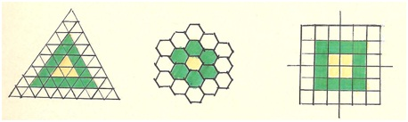 Рис. 1-аВ первом случае игровое поле имеет в центре сильный игровой пункт. А во втором его уникальность разделена между четырьмя ячейками (как в общеизвестных шахматах), что позволяет значительно снизить структурную анизотропию в центре игрового пространства. Теперь ясно, что даже выбор точки отсчёта изменяет свойства игрового пространства. В ограниченных игровых структурах большое значение также имеет форма игрового поля. От неё зависят многие параметры игры. Периметрально правильные игровые поля относятся к гармоничным структурам, лежащим в основе наиболее совершенных игр. Понятие правильность (регулярность) является достаточно ёмким и многоплановым. Его часто употребляют как синоним "симметричного".В математической теории симметрии это слово употребляется в техническом смысле (как, например, слово "группа"). Принято считать, что объект называемся правильным, если он составлен из равных частей, каждая из которых равно расположена относительно остальных частей. Из равенства и равнорасположения частей следует, что для любых двух частей, как бы мы их ни выбирали, всегда существует движение (операция симметрии), переводящая одну часть в другую, а весь объект – в себя. Узор, составленный из нигде не пересекающихся многоугольников, между которыми нет промежутков М. Гарднер называет мозаикой или паркетом. Правильной называется мозаика, целиком состоящая из одинаковых правильных многоугольников, расположенных так, что они имеют общие вершины. Полуправильными мозаиками называются такие, в которых правильные многоугольники двух или большего числа видов, имеющих общие вершины, располагаются в одной и той же циклической последовательности вокруг из каждой из вершин. Известно ровно 8 таких мозаик [6 : 50]. Восьмая структура, впервые описанная Кеплером, хиральна. Было бы точнее назвать эту восьмерку структур почти правильными структурами, так как полуправильных структур с не совсем правильными элементами великое множество. Главным условием симметрии является полное конфигурационное совпадение всех элементов структуры с их первоначальным видом и пространственным расположением при вращении структуры или сопоставлении её элементов. Авторы учебного пособия "Классическая симметрия" [39] В.А. Франк-Каменецкий, П.Л. Дубов, И.И. Шафрановский вслед за Г. Вейлем (1885 - 1955) называют симметрией инвариантность некоторой фигуры относительно совокупности (группы) преобразований. В их работе продемонстрирован вывод 32 точечных, 75 стержневых, 80 слоевых и 230 пространственных фёдоровских групп симметрии. Р. Галиулин пишет, что "это определение Г. Вейля совпадает с определением геометрии по Ф. Клейну (1849 - 1925) – (иностранному членкору Петербургской АН). Согласно «Эрлангенской программе» Клейна задача каждой области геометрии состоит в изучении свойств, инвариантных относительно соответствующей группы преобразований, то есть каждому типу преобразований соответствует свой раздел геометрии". Преобразования (вариации) и их варианты являются важнейшими понятиями и в сфере науки, и в сфере искусства. Наличие поворотной симметрии означает, что при полном обороте структуры в 360° вокруг перпендикулярной к ней оси вращения она совместится сама с собой не менее двух раз. (За один оборот совмещение происходит у любого бесформенного тела, не содержащего в себе никаких признаков упорядоченности и гармонии). Ось симметрии – прямая линия, вокруг которой происходит поворот равных частей симметричной фигуры или структуры. Количество самосовмещений фигуры за полный оборот называют порядком поворотной симметрии. Его можно выразить индексом L. Например: L2, L3, L4… L8 Центральная симметрия осуществляется трансляцией элементов структуры через её фокус симметрии (центр инверсии). При этом указанные элементы структуры транслируются за фокус симметрии с одновременным переворачиванием "изображения" на 180°. Если структура обладает центральной симметрией, то все её элементы должны иметь своих двойников за центром симметрии. (Как, например, двухлопастный пропеллер самолёта. А уже трёхлопастный, обладая поворотной симметрией третьего порядка, центральной симметрией не располагает). Наличие центральной симметрии указывается индексом С. Зеркальная симметрия означает присутствие в структуре одной или нескольких плоскостей симметрии (индекс Р), перпендикулярно проходящих через её центр. Плоскость симметрии – это плоскость, разделяющая структуру на две зеркально-равные части. Но тут есть одна тонкость. Если мы поместим зеркало за пределами структуры и будем его передвигать по её периметру лицом к центру, то скоро убедимся в том, что все структуры делятся на 2 класса. Одни структуры будут отражаться в зеркале без изменений, а другие будут отличаться от своего отражения так, как левая перчатка отличается от правой. Первое свойство называется ахиральность, а второе – хиральностью. Например, доска го – ахиральна. А любая структура в виде левой или правой спирали – хиральна. Зеркальная симметрия вовсе не подчеркивает ту мысль, что если мы поставим зеркало перпендикулярно центру структуры, то её половина в точности ОТРАЗИТСЯ в зеркале. Ведь это происходит всегда! Зеркальная симметрия означает, что отраженная половина структуры совпадает при наложении с той её половиной, которая была закрыта зеркалом. Вот именно в хиральных структурах такого совпадения никогда не произойдет. Коварство зеркальной симметрии, однако, на этом не заканчивается. Если мы начнём перемещать зеркало вокруг шахматной доски, то увидим странную картину. При расположении зеркала между вертикалями d-e или между горизонталями 4-5 доска нам кажется хиральной, а при его расположении по главным диагоналям – ахиральной. Но это противоречие разрешается легко. Если структура имеет хотя бы одну плоскость зеркальной симметрии, она уже не может быть чем-то вроде спирали. А шахматная доска имеет 2 таких плоскости по главным диагоналям. Просто на шахматной доске плоскостей симметрии меньше, чем на доске го. Доска го: L4 4РС Шахматная доска: L2 2PC
Следовательно, доска го имеет вдвое более высокую категорию симметрии, чем шахматная доска. Объективность требует упомянуть ещё один вид симметрии – переносную, допускающую формирование структуры методом параллельного переноса её базовой формы вдоль оси переноса. Но это свойство симметрии наиболее значимо проявляет себя в строении вещества, в художественных орнаментах, в архитектуре и т.д. При формировании игровых структур куда более важное значение имеет их способность к росту от центрального ядра методом их послойного наращивания единичными СОЭЛ или их компактными сочетаниями. Например, на рис. 1-б изображён послойный рост гексагональной структуры вокруг центральной ячейки, которая принимается за первый уровень игрового поля. Все последующие слои получают порядковые номера простого ряда чисел. Отсюда следует, что уровень игрового поля (это ещё одна его характеристика для периметрально правильных структур) определяется порядковым номером замкнутого слоя ячеек по отношению к ядру поля.
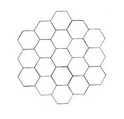 На рис.1-б изображено правильное гексагональное поле 3-го уровня, сумма игровых пунктов которого в зависимости от уровня поля (n) определяется по формуле: Sn= l + 3n(n – l) = 1 + 3·3(3 – 1) = 19 Остальные формулы роста правильных плоскофигурных структур приведены в приложении 1. Одним из важнейшим свойств структурированных игровых пространств (если не главным) является их валентность, формируемая, как известно, валентностью СОЭЛ. Четырёхвалентные СОЭЛ образуют четырёхвалентную структуру (го, общеизвестные шахматы), шестивалентные СОЭЛ - шестивалентную структуру (гекс) и т.д. Общее валентное соотношение всех игорных пунктов в одной игре легко выразить числовым соотношением. Для го (при валентности СОЭЛ, равной 4, 3, 2) оно составит 289 : 68 : 4. Для тетрагональных шахмат (при валентности СОЭЛ, равной 4, 3, 2) оно составит 36 : 24 : 4. Для гексагональных шахмат (при валентности СОЭЛ, равной 6, 4, 3) оно составит 61 : 24 : 6. Изменяя валентное соотношение структуры, можно изменить характер игры. (Обратите внимание, что категория валентности в гексашахматах в 1,5 раза выше, чем в общеизвестных шахматах и в го!) Важнейшим свойством структурированных игровых пространств является, как мы уже говорили, их принадлежность к определённому геометрическому классу структур. К сожалению, у многих исследователей НКС-игр всё ещё нет ясного понимания их отличий. Например, А. Куличихин, с которым мне приходилось общаться, писал: "Поле – место, на которое выставляются фишки в процессе игры (?). Причём если полями являются отрезки прямых линий, то шашечницы называются линейными, если точки пересечения линий – сетки, то шашечницы называются точечными, а если полями являются клетки, то клеточными." Что можно здесь понять?.. Казалось бы, с годами базовая терминология в НКС-играх должна была приобретать более стройный вид – но ничуть не бывало. Ситуация ещё более усугубилась тем, что часть НКС-игр в процессе их стихийного создания оказалась не на своих досках. Подлинная (функциональная) структура игрового пространства и его внешний вид - это не всегда одно и то же. Условимся же во избежание дальнейшей путаницы точечными структурами называть дискретные образования из геометрических точек в том или ином измерении пространства, имеющие потенциальную валентность каждой точки в направлении кратчайших расстояний между ними. Указанные точки и будут являться игровыми пунктами точечных структур. Линейные структуры образуются геометрическими линиями в трёх измерениях пространства в виде отрезков линий, замкнутых линий, плоских сеток или трёхмерных конструкций. Игровые пункты в линейных структурах изображаются как правило в виде точек, лежащих либо на тех или иных участках линий, либо на их пересечении. Таким образом, в точечных и линейных структурах игровые пункты в виде точек совершенно идентичны. Плоскофигурные (или клеточные) структуры образуются из плоских геометрических фигур (СОЭЛ) без зазоров и перехлёстов между ними. Игровыми пунктами таких структур являются плоские фигуры. Объёмные (или трёхмерные) структуры образуются из многогранников, которые способны заполнить пространство без остатка при их плотнейшей упаковке. Игровыми пунктами таких структур являются многогранники. Возникает сразу вопрос: поскольку точечные структуры по сути являются неким аморфным дискретным образованием, то можно сказать, что как единое целое они вообще не существуют? Парадокс же состоит в том, что именно такие структуры занимают самое почётное место у истоков мироздания, определяя всё многообразие реального мира. Что касается НКСИ, то у нас есть подозрение: в тех играх, где фишки по ходу игры не передвигаются, игровое пространство должно состоять из точечных структур. Проблема лишь в том, что точечные структуры требуют реальных носителей своей структуры. Когда они располагаются на линейном каркасе, возникает путаница между точечной и линейной структурой (что произошло, например, в Уэй-чи). Теория суго, впервые опубликованная автором в 1990 году [25 : 178], вносит обнадёживающую ясность в эту запутанную проблему. Суго является игрой типа го на внеструктурном двумерном игровом пространстве. В этой игре игровой пункт в виде реальной физической точки возникает в игровом пространстве только в момент выполнения хода! В итоге вся партия является созданием структурированного точечного пространства буквально из небытия как бы в абсолютной космической пустоте. После чего древние восточные легенды о сотворении мира получают зримые образы в виде захватывающей игры. (Да и кто знает – не результатом ли чьей-то Большой игры являлось возникновение нашей Вселенной?) Валентность каждого установленного камня (потенциально равная шести) будет формироваться узором игры, точнее - тем или иным выбором игроков. Следовательно, го - это лишь частный случай суго в тот момент, когда мы обозначили на чистой плоскости 361 фиксированную точку С ЗАДАННОЙ ВАЛЕНТНОСТЬЮ, но, как мы теперь понимаем, в суго нанесение линий в виде плоского каркаса не требуется: у нас УЖЕ есть несущий каркас в виде чистого листа бумаги. И на нём мы можем расположить все одномерные или двумерные точечные структуры безо всяких линий. На этом заканчивается краткая характеристика общих свойств игровых структур. Классификация пространственных структурообразующих элементов (главным образом в диапазоне 0-8 валентностей) произведена в таблицах 2, 3, 4, 5, 7. Как и игровые структуры они подразделяются на 4 большие группы: точечные, линейные, плоскофигурные и объёмные. Далее классификацию СОЭЛ можно продолжить по их геометрической форме, валентности, по типу симметрии и способности образовывать непрерывные структуры – в Периодической таблице пространственных структурообразующих элементов (таблица 7). Важной особенностью таблиц, классифицирующих СОЭЛ и образуемые ими структуры, является наличие в них правильных криволинейных плоских фигур (экзофигур) с минимальным количеством сторон и углов, а также наличие экзотел (объёмных СОЭЛ с криволинейными поверхностями). Этим вынужденным действием мы заполнили пустующие строки в таблицах плоскофигурных и объёмных СОЭЛ, так как планиметрия не знает плоских фигур с количеством сторон менее трёх и трёхмерных тел с количеством граней менее четырёх. (Более подробно свойства экзофигур и экзотел рассмотрены в 6-ой главе). В таблицах кроме СОЭЛ изображены образуемые ими структуры и показана связь между свойствами СОЭЛ и указанных структур. Следует уточнить, что настоящая работа почти не рассматривает объёмные структуры по целому ряду причин. И прежде всего потому, что они многократно и всесторонне описаны в математических науках и естествознании. Цель работы состоит не в этом. Для нас гораздо важнее: - проследить реликтовую предэволюцию СОЭЛ от геометрической точки до объёмных тел. - выявить структурообразующие зоны в непрерывном ряду СОЭЛ, начиная с простейших, в пространствах трёх измерений. - дать полную классификацию и общие свойства СОЭЛ. - показать логическую связь между свойствами СОЭЛ и свойствами образуемых ими структур. Другой причиной сжатого описания объёмных структур является почти полное их отсутствие в комбинаторно-стратегических играх. Многие авторы любят вскользь упомянуть об объёмных шахматах, но ни один из них не удосужился произвести для начала хотя бы раскраску их кубического игрового пространства, которое отнюдь не является двухцветным. (У меня она есть). Вот почему автор настоящей работы ограничивается в реальных примерах описанием лишь трёх своих вариантов трёхмерного го (Уэй-чи, вейчи). Всё, что касается шахмат, будет освещено в других главах этой книги. Нельзя, конечно, назвать случайностью тот факт, что мы не просто описывали возможно большее количество СОЭЛ, но и сознательно стремились расширить их диапазон. В итоге мы с запасом расширили диапазон СОЭЛ: в меньшую сторону –до нулевого предела, в большую – до способности СОЭЛ образовывать непрерывные полуправильные структуры (кроме тех, что описаны в таблице 6, являющейся лишь началом обширного перечня многогранников с возрастающим количеством граней). Разумеется, Лобачевский стоит впереди Евклида, он более обширен и универсален, вбирая в себя в зародыше множество других геометрий, содержащих в себе бездну новых знаний. Всё, что легко доступно нашему пониманию – это лишь внешняя оболочка истины. К общим свойствам СОЭЛ относится их способность иметь определённую геометрическую форму, определённую валентность и категорию симметрии. Геометрическая форма СОЭЛ всегда сохраняется в образуемых ими правильных структурах. Однако не следует забывать, что в сложных неоднородных структурах вступает в силу комбинаторика: из одних и тех же наборов СОЭЛ можно собрать структуры с различными свойствами. Этот принцип широко используется и в самоорганизации материи, и в искусственных процессах. Но не в безграничных пределах: развитие многих наук убедило учёных, что в природе имеются законы, ограничивающие многообразие форм и регулирующих принципов. Рассматривая приведённые ниже таблицы, описывающие классификацию и свойства СОЭЛ и образуемых ими структур, прежде всего мы отмечаем равенство валентностей СОЭЛ и соответствующих им структур: трёхвалентный элемент образует трёхвалентную структуру, четырёхвалентный - четырёхвалентную и т.д. Но это правило справедливо лишь для неограниченных правильных структур. Игровые пункты, расположенные по периметру ограниченных структур, теряют часть своих валентностей естественным образом. В итоге все игровые пространства в реальных играх имеют определённое процентное соотношение разно-валентных СОЭЛ, являющееся важнейшей характеристикой как игрового, так и физического пространства. Второй обнаруженный эффект - совпадение видов симметрии СОЭЛ и образуемых ими структур. Им обладают, как правило, только элементы и структуры с чётной валентностью в диапазоне 2 - 4 - 6 (например, в линейных двумерных и плоскофигурных структурах). Таким образом, мы можем сказать, что свойства структур в известной степени формируются свойствами СОЭЛ. И поэтому для изучения свойств структур необходимо иметь полное представление о типах СОЭЛ и их эволюции. Именно этот принцип и был положен автором в основу теории игровых структур. Что касается, к примеру, шахматных игровых пространств, то в них связь между элементами и структурой носит ярко выраженный функциональный характер. То есть зарождение основополагающего шахматного принципа (ОШП) происходит сначала в ячейке игрового поля, а затем его действие распространяется в структуру, где он и реализуется в полной мере, определяя такие важнейшие признаки шахматной игры, как ортогональное и диагональное направления игрового поля, метод раскраски шахматных структур, типы шахматных фигур и формы их взаимодействия. (А кто-то всё ещё полагает, что тот или иной объективный закон можно не открыть, а сочинить. Автор отнюдь не против изобретательства и сочинительства. Но иногда грустно видеть путаницу в головах). Пьер Кюри отмечал, что симметрия среды как бы накладывается на симметрию тела, образующегося в этой среде [41 : 113]. Получившаяся в результате такого влияния форма тела сохраняет только те элементы своей собственной симметрии, которые совпадают с наложенными на нею элементами симметрии среды. (Причём по типу симметрии того или иного вещества можно предвидеть его физические свойства.) Мы описываем обратный процесс: влияние типа симметрии геометрического объекта на тип симметрии формируемой им структуры. В дискуссии между "номогенетиками" и "селекционистами" в журнале "Природа" № 9 за 1979 год С.В. Мейен обронил интересную фразу: "Мы не знаем, какие факторы отбора создали 5 лепестков у цветка гусиной лапки и 4 лепестка у сурепки, 6 ног у насекомых и 8 ног у паукообразных". В сфере НКС-игр ситуация более утешительна. Мы уже знаем, сколько "лепестков" и "ног" у всех ортодоксальных шахматных фигур для каждой из 70-ти шахматных структур, описанных в Общей шахматной теории – у автора этой работы. Как знаем и формирующие их факторы. То же самое можно сказать и об остальных НКС-играх в более строгом описании в последующих главах.
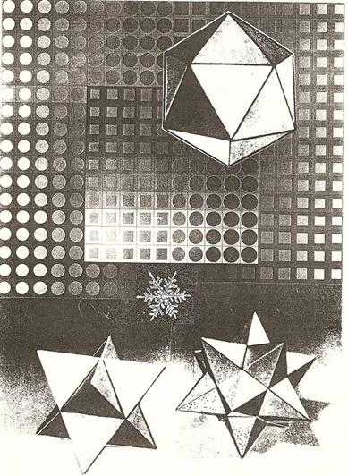 Глава 2 ТОЧЕЧНЫЕ СТРУКТУРООБРАЗУЮЩИЕ ЭЛЕМЕНТЫ И СТРУКТУРЫ Точечные игровые структуры в пространстве трёх измерений показаны в порядке возрастающей валентности (z) в таблице 1. В верхней части таблицы расположены точка, дуплет и триплет. Они совершенно идентичны для всех трёх типов пространств. Точка, разумеется, не имеет никакой мерности. Здесь она представлена как исходный абсолют во всех измерениях. Дуплет предполагает наличие двух рядом расположенных точек потенциальной одновалентности в виде хотя бы малейшего "интереса" друг к другу – или взаимозависимости в математическом или физическом смысле. Дуплет является простейшей структурой, состоящей из ограниченной пары точек. Триплет можно определить как начало линейного множество точек, все внутренние точки которого имеют потенциальную двухвалентность. Здесь происходит зарождение непрерывных одномерных структур с явно выраженной дискретностью. Вся горизонтальная строка триплетов окаймлена жирной чертой, потому что она является началом бесконечного ряда одномерных структур во всех трёх измерениях. Каждая из последующих структур этого ряда будет отличаться только количеством точек. При этом структуры будут расти от центральной точки сразу в оба конца. Формула роста такой простейшей структуры выглядит следующим образом: Sn = l + 2(n – 1) Формула роста для структур с чётным количеством точек будет иметь другой вид. В этом случае за центр структуры принимается условная точка на плоскости симметрии структуры, лежащая между двумя игровыми пунктами: Sn = 2 + 2(n – l) Далее представлено трёхвалентное компактное образование (триада) в форме правильного треугольника. На этом шаге эволюции был впервые создан прообраз простейшей правильной геометрической фигуры - ТРЕУГОЛЬНИКА. Причём в виде изолированного образования, а не как часть неограниченной правильной структуры из шестивалентной строки. Затем ниже показан окаймлённый жирной чертой вертикальный ряд неограниченных структур с третью по шестую валентность. Третье измерение пространства занимает два столбца таблицы. В первом из них в трёхвалентной строке изображён тетратет – простейшее локальное образование из трёхвалентных точек в трёхмерном пространстве. Неограниченные трёхмерные структуры (также окаймлённые жирной чертой) представлены во втором столбце трёхмерных объектов. Указанные многогранники (как и тетраэдр) имеют такие же трёхвалентные вершины, но образованные ими непрерывные структуры будут иметь пяти-, шести- и восьмивалентные точки в их вершинах. Далее нельзя было не упомянуть широко известное образование в виде плотнейшей упаковки шаров, центры которых будут иметь 12-валентные точки. Разумеется, предлагаемая таблица может быть легко дополнена большим количеством материала из различных областей знания, но теория игровых структур вовсе не является попыткой суммировать такой обширный материал. Наша задача - показать взаимосвязь простейших маловалентных структур в трёх типах пространств у истоков их зарождения и проследить их эволюцию вплоть до образования наиболее распространённых видов. Как правило – в маловалентном диапазоне. Хорошо отражён смысл последовательной эволюции СОЭЛ у Карла Левитина: "Симплекс – это простейшая из всех возможных фигур... Одна точка – это нульмерный симплекс... Две точки определяют отрезок - одномерный симплекс... Третья точка превращает линию в треугольник - двумерный симплекс. Ещё точка – и вот перед нами пирамида, трёхмерный симплекс. Но вот добавлена пятая точка. Эта необычная конструкция состоит из пяти пирамид. Все вместе они отделяют четырёхмерный симплекс от остального четырёхмерного пространства точно так же, как шесть граней куба отделяют его от остального трёхмерного пространства, а три стороны треугольника ограничивают его на плоскости." В кристаллографии хорошо известны (R,r)-системы Делоне, описывающие евклидово пространство как системы точек. Его геометрическая модель отображает наиболее общую закономерность расположения центров атомов в любом бесконечном атомном образовании. Глава 3 ЛИНЕЙНЫЕ ДВУМЕРНЫЕ СТРУКТУРООБРАЗУЮЩИЕ ЭЛЕМЕНТЫ И СТРУКТУРЫ В таблице 2, охватывающей диапазон валентностей 0-6, показано образование двумерных линейных структур из линейных двумерных СОЭЛ, расположенных во втором столбце таблицы. Нульвалентный СОЭЛ является изолированной точкой. Одновалентный элемент состоит из точки и одного луча, выходящего из этой точки. С ростом валентности СОЭЛ растёт и количество лучей. Полученные в итоге звёздообразные плосколинейные структуры образуют полный ряд линейных двумерных СОЭЛ с последовательно возрастающей валентностью от 0 до 6. Образуемые СОЭЛ структуры изображены в 4-м столбце таблицы. В 3-м и 5-м столбцах таблицы показаны индексы симметрии СОЭЛ и структур. Например, индекс L4 *4PC означает, что объект обладает поворотной симметрией четвёртого порядка, четырьмя плоскостями симметрии и центром симметрии. Таблица 2 демонстрирует хорошо прослеживаемое влияние геометрических свойств СОЭЛ на образуемые ими структуры, которые являются правильными. Но пятивалентная линейная структура удивительным образом избегает трансляции указанной симметрии от СОЭЛ к структуре. Она вообще феноменальна! То есть как бы имеет равномерно распределённую ярко выраженную внутриструктурную анизотропию, в результате которой индексы симметрии базовых СОЭЛ и образуемой ими структуры не совпадают. Во всех остальных строках они полностью совпадают. Это означает, что симметрия СОЭЛ в правильных структурах формирует симметрию и свойства этих структур. Скорее всего, мы должны удивляться не нарушению трансляции симметрии в пятивалентной структуре, а тому, что она вообще смогла образоваться. Глава 4 ЛИНЕЙНЫЕ ТРЁХМЕРНЫЕ СТРУКТУРООБРАЗУЮЩИЕ ЭЛЕМЕНТЫ И СТУКТУРЫ В первых трёх строках таблицы 3 расположены маловалентные трёхмерные СОЭЛ, относящиеся, по сути, к безмерным и одномерным объектам, но без них таблица была бы неполной. Трёхвалентная линейная структура является первым видом трёхмерных линейных структур, но в НКС-играх она имеет плохие перспективы, чего нельзя сказать о структурах с 4-й по 6-ю валентность. Они легко образуют серию широко известных трёхмерных решёток, имеющих отличные перспективы в трёхмерном го. Что и было реализовано автором в виде "Пчелиного дома" (четырёхвалентное го на гексагональной решётке), "Цапли" (кубическое 5/4-валентное го), "Каркаса" (кубическое 5/6-валентное го). В трёх последних строках таблицы расположены СОЭЛ и структуры 7-9 валентности. Они могут образовать двухслойные линейные структуры, которые, пожалуй, могут заинтересовать лишь технических специалистов. Плосколинейные структуры, представленные в таблице 2, широко применяются в шашечных играх и играх типа го, но их применение в шахматных играх является результатом полнейшего непонимания объективных законов шахматной игры. Глава 5 ПЛОСКОФИГУРНЫЕ СТРУКТУРООБРАЗУЮЩИЕ ЭЛЕМЕНТЫ И СТРУКТУРЫ Таблица 4 иллюстрирует метод составления плоскофигурных мозаик из СОЭЛ с диапазоном валентности 0-8. Она включает полный перечень указанных элементов и образуемых ими структур с указанием их типов симметрии. Три правильных мозаики на основе треугольника, квадрата и шестиугольника были известны ещё древним грекам, но они охватывают лишь незначительную часть полного диапазона плоскофигурных структур. На самом деле весь перечень плоских мозаик выражается четырёхзначным числом, окончательную величину которого математики и кристаллографы определили лишь в 1990 году! А до этого шёл процесс накопления фактов в одной из увлекательнейших областей знания - в геометрии, которая "в своей сущности и основе... есть пространственное воображение, пронизанное и oрганизованное строгой логикой" (А.Д. Александров). За неимением места автор не даёт полного обзора публикаций на эту тему, начиная с той эпохи, когда Фалес и Пифагор перевели математику из разряда прикладных методов (в основном измерительных и счетных) в область математической теории, а применение дедуктивного метода в математике дало "Начала" Евклида (325 г. до н. э.), остававшиеся идеалом научной строгости 2 тысячи лет. При этом 5 книг из 13-ти почти полностью, как мы знаем, разработаны пифагорейцами, заложившими кроме этого основы учения о теории чисел, теории пропорций, начал стереометрии и математической теории музыки. Далее хотелось бы упомянуть эпоху Возрождения, гениальные энциклопедисты которой завершили формирование научных методов мышления. Среди них – Галилей, Кардано, Бруно, Коперник, Тихо Браге, Кеплер, Дюрер, Леонардо да Винчи, Скалигер и другие имена. Все они, безусловно, с вершины нашей пирамиды знаний в чём-то кажутся более наивными, чем мы. Но нас до сих пор поражает их более целостное восприятие мира. "В любом веществе заключено формообразующее начало", – прозорливо заметил Иоганн Кеплер в трактате "Новогодний подарок или О шестиугольных снежинках" (1611 г) – [27]. "Первым, кто увидел глубокую общность мозаик и многогранников, – пишет Карл Левитин, - был Иоганн Кеплер. Именно он предложил рассматривать плоскость, заполненную прилегающими друг к другу многоугольниками, как выродившийся многогранник и потому смог применить к ним одну и ту же общую теорию.". И. Кеплер (1571 - 1630) – немецкий астроном, математик, астролог и писатель. Наряду с И. Коперником, Г. Галилеем, Р. Декартом, Р. Бойлем, Х. Гюйгенсом и И. Ньютоном был одним из создателей науки Нового времени, заложил основы теории тяготения, открыл законы движения планет (законы Кеплера) и составил планетарные таблицы. Кеплер знал греческий и древнееврейский языки, изучал риторику, поэзию, этику, философию, религию. Его образцы научно-художественной прозы были изданы московским издательством "Наука" в 1992 году в переводах с латинского Ю.А. Данилова. Сочинение И. Кеплера "О шестиугольных снежинках" явилось, по словам И. Шафрановского, "первым по времени кристаллографическим трактатом". Такого же мнения придерживался и В. Вернадский. Изучение Кеплером задач по определению вместимости винных бочек положило начало целому ряду исследований, приведших к созданию И. Ньютоном и Г. Лейбницем дифференциального и интегрального исчислений. Кроме этого Кеплер составил таблицы логарифмов, которые в отличие от неперовских таблиц были более похожи на современные. Он также давал советы создателю первой вычислительной машины В. Шикарду, внёс большой вклад в теорию конических сечений, способствовал созданию проективной геометрии, впервые описал звёздчатые октаэдры и большой додекаэдр (Пифагор, как мы помним, впервые описал куб и спорил с Гиппасом за приоритет открытия додекаэдра, а Теэтет открыл октаэдр и икосаэдр). Но для большинства читателей Кеплер был предтечей великого британца Льюиса Кэрролла – одним из талантливейших популяризаторов математики и логики, чародея слова и короля парадоксов, стоящим в одном ряду с гениями научно-художественного мышления, начиная с Леонардо и Дюрера – и кончая Хессе и Эшером. Книгу Вселенной, по словам Галилея, может читать лишь тот, кто сначала освоит её язык и научится понимать знаки, которыми она начертана. Написана же она на языке математики, а знаки её – треугольники, окружности и другие фигуры.То есть – сама геометрия мироздания. Вот почему учёные с такой настойчивостью продолжают развивать связанные с этой темой отрасли знания. В этой связи нельзя не упомянуть феноменальное достижение петербургского академика Е. Фёдорова (выпускника Горного института, в 16-летнем возрасте начавшего работать над своей первой монографией "Начала учения о фигурах") и А. Шенфлиса, одновременно получивших все возможные в пространстве 230 групп симметрии, определяющие собой всё разнообразие кристаллических форм в природе. При этом первый автор шёл к цели геометрическим путем, а второй использовал алгебраический аппарат теории групп. Фёдоровская группа – это лишь (по удачному выражению П. Зоркого) канва, по которой природа может вышивать бесконечно разнообразные узоры атомных расположений. Причём фёдоровские группы были открыты задолго до того, как учёные получили возможность изучать действительное расположение атомов в кристаллах!..А 17 видов симметрии плоских орнаментов впервые были описаны Евграфом Фёдоровым в работе "Симметрия на плоскости", опубликованной в Санкт-Петербурге еще в 1891 году. (Хотя многие из них давно были известны древним ремесленникам. Г. Вейль (1885 - 1955) справедливо указывает, что " искусство орнамента содержит в неявном виде наиболее древнюю часть известной нам высшей математики.") – [4 : 126].
Последовательное изложение главных событий в окончательном оформлении полной картины разбиений плоскости на мозаики дано у Р. Галиулина. Особое место в этой цепи событий на наш взгляд занимает формулировка теоремы Шубникова-Лавеса, гласящей, что существует только 11 комбинаторно-различимых разбиений плоскости на одинаковые многоугольники (планигоны). При этом выяснилось, что правильные СОЭЛ в такой системе не могут иметь больше шести смежных соседей (в гексагональной структуре).
Для построения разбиений, дуальных к разбиению плоскости на одинаковые многоугольники (планигоны), достаточно взять по произвольной точке в каждом планигоне и точки, соответствующие смежным планигонам. Затем соединить их линиями, проходящими через соответствующие ребра. Многоугольники, составляющие эти разбиения, могут быть различными, но в каждой их вершине сходится одинаковое количество рёбер. Академик А. Шубников назвал эти сетки планатомными, так как он считал их полезными для изучения расположения атомов на гранях кристаллов. Эта теория Шубникова составляет значительную часть дискретной геометрии. На рис. 2 приведены некоторые планатомные сетки Шубникова с соответствующими им планигонами Дирихле.
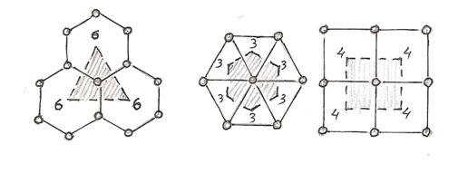 Рис.2 В истории правильных разбиений плоскости произошло много событий. Например, Делоне нашел 46 сортов общих правильных разбиений плоскости, затем Грюнбаум и Шепард ввели более тонкую квалификацию правильных плоских узоров, чьи элементы симметрии действуют на составляющие его мотивы. Они показали, что на плоскости существует всего 52 различных типа правильных узоров из изолированных мотивов, ограниченных простыми замкнутыми кривыми. Невозможно перечислить всех, кто внёс вклад в теорию мозаик: М. Эшер, Кершнер, Рейнхард, Джеймс III, Уилкокс, Шаттшнейдер, Райс, Стейн, Голомб, Конуэй, Берд, Хао Ван, Бишоп, Кларк, Харрис, Филпотт, Белл, Макмагон, Пенроуз, Робинсон… Это же так увлекательно! Полная классификация 2-изовариантньх мозаичных размещений поверхности была представлена О. Дельгадо, Д. Хьюсоном и Е. Заморзаевой лишь в 1990 году ! Она охватывает 1270 типов размещений плоскости [22]. Размещения, разбиения – это расположения фигур в пространстве, которое одновременно является и упаковкой и покрытием. То есть фигуры не имеют общих внутренних точек и покрывают всё пространство. К ним относятся паркеты, мозаики – и непрерывные игровые структуры. (Должен выразить особую благодарность специалистам Горного института (университета) А.И.Глазову, П.Л. Дубову и А.И.Короткову, которые оказали мне неоценимую помощь в поиске работы О.Дельгадо, Д.Хьюсона и Е. Заморзаевой до её официальной публикации – и затем содействовали моему участию в традиционной Фёдоровской сессии, где я впервые сделал сообщение о многоцветных шахматных струкутрах). Символ Шлефли {p,q} – двузначный индекс, характеризующий тип вершины правильного многогранника. Первое число указывает на количество углов в его грани, а второе – на количество таких граней в его вершине. При этом второе число ассоциируется со множителем. Символ {3, 5} можно прочесть как запись о том, что данная вершина содержит 5 треугольников: треугольников – пять. В развернутом виде множитель опускается: {3·3·3·3·3}. Именно развёрнутые символы удобны при сравнении многогранников с многоугольниками (см. таблицу 10). Вполне понятно, что правильные пятиугольники, семиугольники и восьмиугольники непрерывных структур образовать не могут. Их нужно либо деформировать, либо дополнять другими СОЭЛ. Правильная фигура в качестве структурообразующего элемента должна иметь угол, который бы в сочетании с самим собой смог бы образовать 360 градусов. Если мы разделим 360 градус на простые числа, то мы получим лишь 3 подходящих многоугольника с углами в 120, 90 и 60 градусов. На рис. 3 сетки составлены из фигур с разными осями симметрии. Пятиугольники, семиугольники и восьмиугольники не могут примыкать друг к другу вплотную без зазоров [41 : 49].
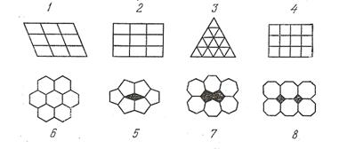 Рис. 3 Первые три строки таблицы 4 поначалу были пусты. Поэтому возникла идея заполнить их некоторыми плоскими фигурами с минимальным количеством сторон и углов. На эту роль подошли так называемые экзофигуры – производные от простейшей геометрической фигуры (круга). После этого начало полного ряда плоскофигурных СОЭЛ стало выглядеть следующим образом: круг, одноугольник, двуугольник (чьи стороны и углы равны между собой). Одноугольник и двуугольник являются переходными фигурами между кругом и треугольником. Именно в этих фигурах происходит зарождение основополагающего шахматного принципа (ОШП), лежащего в основе общей шахматной теории. Есть основание полагать, что именно в этих экзотических фигурах (как и в их трёхмерных аналогах) кроется немало интереснейших идей и находок в различных областях знания. Солнце… Земля… капля… купол храма… веретено… чёлн… глаз... Разве это случайные образования без глубочайшей рациональной красоты и гармонии? В них много тайны, символики – и в то же время реального волшебства физических законов. Примечательно, что двуугольники легко образуют правильную неприрывную структуру, в которой одноугольники могут выступать в роли периферийных игровых ячеек с уменьшенной валентностью. При составлении структур неправильные многоугольники следует применять не только в неказистых пятивалентных и семивалентных структурах, где без них просто не обойтись. Как оказалось, не совсем правильные структуры вполне имеют право на существование даже в тех графах таблицы, где, казалось бы, безраздельно властвуют абсолютно правильные структуры. То есть полуправильные структуры легко заполняют весь диапазон таблицы. Тот, кто пытается игнорировать широкое распространение полуправильных структур, просто не в состоянии оценить реальную картину мироздания. И этот общий закон во всей полноте проявляет себя и в НКС-играх. Пора привыкать к мысли, что абсолютно правильные структуры – это не правило, а лишь исключение из правил. Теперь ясно, каким образом нам удалось добиться того, что числа валентного ряда в таблице плоскофигурных элементов и образуемых ими структур представляют собой начало простого ряда чисел. Рассмотрим теперь в таблице 4 индексы симметрии СОЭЛ: все их цифровые значения полностью совпадают с номером валентности строки (кроме индексов дополнительных неправильных фигур и круга, который является абсолютом). В чётновалентных структурах (кроме 8-ой, которая не является однородной) наблюдается полное совпадение индексов симметрии СОЭЛ и структур (L·2PC, L4·4РС, L6·6РС). Тема квадрата (L4·4PC) явственно слышится не только в четырёхвалентной и восьмивалентной строках, но и в трёхвалентной строке (!), где 2 равнобедренных треугольника, как известно, легко складываются в квадрат. А гексагональные мотивы (L6·6РС) продиктованы тем, что правильные треугольники легко складываются в ромб и шестиугольник (триогенная, ромбоидальная и гексагональная структуры). Круг, разумеется, уникален во многих отношениях. И, безусловно, он является не только прародителем всех плоских фигур, но и их "жизненным" пределом. Вот их эволюционная судьба: от одноугольника до бесконечноугольника со сколь угодно большим числом сторон, почти неразличимым на глаз. Образованная кругом моноструктура состоит из одного круга. Следовательно, в первой строке таблицы такой СОЭЛ нульвалентен, но его потенциальная валентность, как мы знаем из курса планиметрии, может достигать шести. (Тут мы снова вторгаемся в теорию суго.) Примечательно, что первая в эволюционном ряду плоская структура не только состоит из простейших геометрических фигур, но и имеет в своем составе всего лишь одну такую фигуру. А в одновалентном ряду структура состоит уже из двух (и только двух) элементов, так как остальные прибавлять некуда: все валентности уже заняты. И лишь с третьей строки начинается образование бесконечных (в теории) структур, которые на практике имеют вполне определённые размеры. Такое "сотворение" структурного мира (от точки, от круга, от шара) математически и логически выглядит вполне обоснованным и вполне уместным: сей мир вовсе не начинается с треугольника и тетраэдра, он давно требует ясного изложения своей ПРЕДЭВОЛЮЦИИ, отражённой в теории игровых структур. Итак, семейство плоскофигурных структур состоит из четырёх правильных (диогенная, триогенная, тетрагональная, гексагональная), восьми полуправильных и 1258-ти не совсем правильных 2-изовариант-ных структур. А неправильных мозаик – бесконечное множество. Глава 6 ЭКЗОФИГУРЫ И ЭКЗОТЕЛА В РОЛИ СТРУКТУРООБРАЗУЮЩИХ ЭЛЕМЕНТОВ ПЛОСКОФИГУРНЫХ И ОБЪЁМНЫХ СТРУКТУР Экзофигуры – это плоские криволинейные фигуры с минимальным количеством сторон и углов, построенные с помощью циркуля и линейки. Простейшая плоская правильная фигура (круг) является обязательным элементом для всех правильных экзофигур. Вторым составным элементом экзофигур, присоединяемым к исходному кругу, является плоский криволинейный равносторонний треугольник, (косынка), образованный на свободном пространстве между тремя равновеликими кругами при их плотнейшей упаковке (см. рис. 4 и таблицу 6). Начало ряда экзофигур образовано кругом, одноугольником и двуугольником с возрастающей валентностью: 0 – 1 – 2.
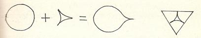 Рис. 4 Свойства экзофигур 1. В любую экзофигуру вписывается круг. 2. Количество косынок у правильных экзофигур не может быть больше шести. 3. Все экзофигуры, построенные на оговоренных выше условиях, являются правильными фигурами – в том смысле, что они не содержат в себе неравных сторон и углов, а все их стороны представляют собой комбинацию кривых постоянного радиуса. У всех правильных экзофигур, имеющих углы, количество сторон равно количеству углов. Правильные экзофигуры способны образовать правильные трёхмерные экзотела. Вращая круг, мы получим шар. Вращая косынку, мы получим криволинейный конус с вогнутым днищем. Он будет похож на острый шип. Приставляя к шару шипы, начиная с одного, мы получим весь набор правильных экзотел, весьма похожий на семейство морских радиолярий. 3. Все экзофигуры участвуют в последовательном формировании основополагающего шахматного принципа (ОШП). Ладья впервые заявляет о себе в круге, слон – в одноугольнике, ферзь – в двуугольнике.
На рис. 5 изображена 1-я фаза ОШП. Здесь происходит зарождение ладьи с нефиксированным направлением движения. На рис. 6 - 2-я фаза ОШП. Зарождение слона и фиксация направлений передвижения ладьи и слона. На рис. 7 - 3-я фаза ОШП. Разделение направлений передвижения двух базовых фигур. Зарождение первой производной фигуры – ферзя.
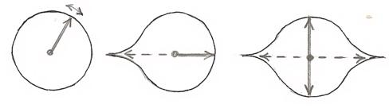 Рис. 5 Рис. 6 Рис.7
5. Только посредством экзофигур был расширен перечень элементно-правильных однородных структур. Теперь он выглядит следующим образом: диогенная, триогенная, тетрагональная и гексагональная структуры. Присутствие описанных выше экзофигур в таблице 4 вполне очевидно. Вместе с неравносторонними пятиугольниками и семиугольниками они позволяют создать полный ряд плоскофигурных струтурообразующих элементов с валентностью от 0 до 8. И, таким образом, с исчерпывающей полнотой исследовать весь их диапазон. Отдельного пояснения требует последняя строка таблицы 4. В неё помещён круг в активной фазе – в отличие от нульвалентного пассивного круга, помещённого в первой строке таблицы. Все возможные типы его валентности будут выглядеть так:
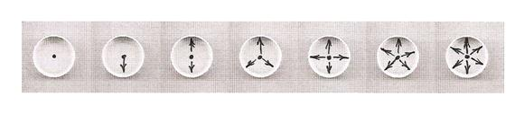 Рис. 8 Постулат об экзофигурах В главном ряду правильных многоугольников имеют место правильные плоские криволинейные фигуры с наименьшим количеством сторон, не содержащих в себе неравных сторон и углов и описанных кривыми постоянного радиуса. Условимся называть такие фигуры экзофигурами. Их можно получить с помощью циркуля и линейки, комбинируя круг с криволинейными равносторонними треугольниками, образующимися на свободном пространстве между тремя кругами при их плотном касании. (См. рис. 4). Экзотела – это трёхмерные криволинейные тела с минимальным количеством граней, рёбер и вершин. Правильные экзотела могут быть получены комбинациями двух тел вращения, образованными посредством вращения элементов правильных экзофигур. Полный перечень экзотел представлен в таблице 6а. Первые три экзотела (шар, однополюсный моноэдр и двухполюсный моноэдр) имеют всего лишь по одной криволинейной грани, которая замкнута сама на себя в виде той или иной правильной сферы (мяч... капля... веретено). При этом первые два тела вообще не имеют рёбер, а последнее имеет его только в виртуальном виде. Его, оказывается, должен нарисовать (!) некоторый наблюдатель, соединив чертой две вершины веретена - и тем самым завершив создание этого странного тела. Таково свойство всех экзотел при количестве вершин у них более двух. Автор полагает, что специалисты, изучающие структуру вещества (включая живые организмы), давно обратили внимание на наличие в тех или иных телах и структурах не всегда объяснимых швов. Не поможет ли им геометрия экзотел подсказать ответы на некоторые загадки? И нет ли похожей систематизации простейших форм в более тонкой структуре материи? Свойства экзотел 1. В каждое из экзотел можно вписать шар. 2. Все экзотела за исключением шара соответствуют формуле Декарта-Эйлера (В – Р + Г = 2). 3. Все экзотела являются правильными в том смысле, что они не содержат в себе неравных граней, рёбер и телесных углов – а их поверхности имеют совместимую кривизну одного радиуса. 4. Экзотела являются аналогами экзофигур в трёхмерном пространстве.
Я лично не встречал публикаций об экзотелах в систематическом изложении. Как геометр я излагаю то, что вижу. Но я настаиваю, что математики должны согласиться с тем, что экзотела являются необходимым дополнением к теории многогранников. Да, они криволинейны. Но ведь они подчиняются закону Декарта-Эйлера. Не в след ли за Лобачевским нужно сделать прорыв для расширения теории многогранников?
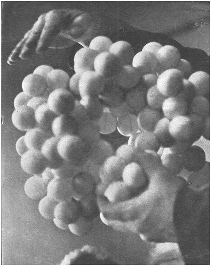
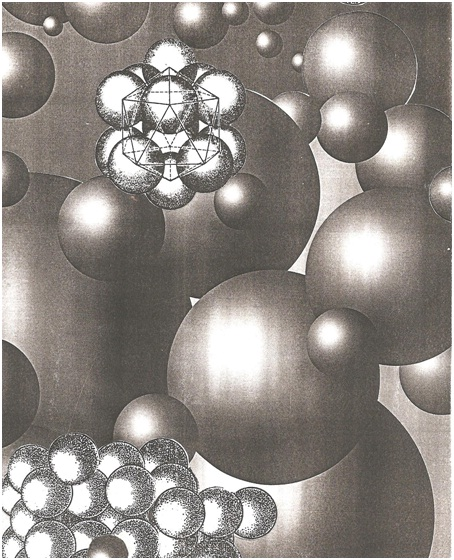 Глава 7 ТРЁХМЕРНЫЕ СТРУКТУРООБРАЗУЮЩИЕ ЭЛЕМЕНТЫ И СТРУКТУРЫ Объёмные СОЭЛ (главным образом маловалентного диапазона) представлены в таблице 5. Они расположены в порядке убывания валентности, описан их вид симметрии, даны их названия, соответствие формуле Эйлера и развернутые символы Шлефли. Сразу бросается в глаза тот факт, что их структурообразующие способности начинаются только с 9-й строки таблицы (с треугольной призмы), а первую правильную объёмную структуру из кубов они создают лишь в следующей десятой строке. То есть тем самым объёмные СОЭЛ как бы полностью выпадают из маловалентного диапазона в плане создания непрерывных структур - зато здесь богато представлены экзотела в их полном виде. Нас прежде всего интересует не крайне занимательное описание всего семейства многогранников (включая историю их открытия), а прежде всего их способность заполнять трёхмерное пространство без остатка. Существует только 5 типических параллелоэдров такого типа, заполняющих трёхмерное пространство без остатка – тела Фёдорова (рис. 9): Путём растяжений или сдвигов у 5-ти типических параллелоэдров можно получить бесконечное множество производных параллелоэдров. Приписав параллелоэдру определённую симметрию, можно разделить его на равные части, ориентированные в общем случае не параллельно. Такие части принято называть стереоэдрами. Они представляют наименьшую неделимую часть дисконтинуума. Например, куб можно разделить по плоскостям на 48 стереоэдров. При выводе Е.С. Фёдоровым 230 видов симметрии дисконтинуума они сыграли очень большую роль. Задача о плотнейших упаковках различных фигур также может быть сведена (или частично сведена) к задаче о заполнении пространства стереоэдрами и параллелогонами (См: Б.Н. Делоне, (1934): Упаковка шаров). Этой же задачей занимались Н.В. Белов (1947) и Тот (1958). Е. Фёдоров ввёл целые серии новых типов многогранников: изоэдры, изогоны, параллелоэдры, стереоэдры, койлоэдры.
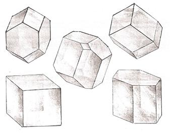 Рис. 9. Пять тел Фёдорова.
Последние результаты теории классификации многогранников связаны с выводом 53-х звёздчатых аналогов тел Архимеда и с выводом 92-х выпуклых многогранников с правильными гранями. Класс полуправильных многогранников составляют тела Архимеда, тела Гесселя, бесконечные серии призм и антипризм с правильными гранями, бесконечные серии дипирамид и дельтоэдров с правильными вершинами. Все они выводятся из формулы Декарта-Эйлера. Комбинаторно одинаковые многогранники имеют равное количество вершин, рёбер и граней, но они могуг быть по-разному склеены. У многогранников с 5-ю гранями имеется 2 комбинаторно-различимых типа, с 6-ю гранями – 7 типов, с 7-ю гранями – 34 типа, с 8-ю гранями – 257(!). Для 12-гранников это число превышает десятки тысяч. Таков истинный размер таблицы 5. Для нас же содержательным является лишь начало этой главы. Что касается НКС-игр, то кроме крестиков-ноликов на трёхмерной кубической структуре и предложенным автором трёх вариантов Го на трёхмерных линейных структурах пока что нечего вспомнить. Как известно, чем бы ни занимались физики, у них всё равно получится бомба. А вот что сказал членкор Академии наук Лазарь Люстерник о многогранниках: «На разных этапах развития математики вплоть до настоящего времени геометры возвращались к теории выпуклых многогранников и открывали в ней новые фундаментальные факты». Не избежал этой участи и автор настоящей работы. Если отбросить всякую ересь о магических квадратах и божественном (?!) происхождении шахмат, то, как оказалось, у истока самых сложных комбинационных игр, включая шахматы и го, можно обнаружить всю ту же теорию выпуклых многогранников. Например, в излагаемой здесь Теории игровых структур.
Глава 8 ПЕРИОДИЧЕСКАЯ ТАБЛИЦА ПРОСТРАНСТВЕННЫХ СТРУКТУРООБРАЗУЮЩИХ ЭЛЕМЕНТОВ После классификации точечных, линейных, плоскофигурных и объёмных СОЭЛ поместим их в одну сводную таблицу 7 (кроме совсем уж экзотических точечных) для выявления полной картины взаимозависимости между их свойствами. А также для выявления наиболее продуктивных структурообразующих зон во всех трёх типах пространства. Линейные СОЭЛ имеют структурообразующую способность в виде правильных однородных структур в интервале 1-8 валентностей (за исключением 7-ой валентности). Плоскофигурные – в интервале 2-4 и 6-ой валентностей. Объёмные – только в 6-ой валентности. (Образование плотных непрерывных трёхмерных структур начинается лишь с пятой валентности, где появляется полуправильная фигура – треугольная призма - так как она составлена из неоднотипных граней. Полуправильная шестиугольная призма завершает этот ряд в нижней строке восьмой валентности. Есть ещё 3 полуправильных тела Фёдорова в диапазоне 12 – 14 валентностей, но они лежат за пределами этой таблицы). Итак, анализ показывает преимущество чётновалентных СОЭЛ, образующих богатые структурообразующие зоны. Именно в четырёхвалентной строке находятся игровые поля го и общеизвестных шахмат – самых популярных НКС-игр. А шестивалентная строка таблицы является СТРУКТУРООБРАЗУЮЩИМ АБСОЛЮТОМ для всех трёх типов игрового пространства. Остаётся лишь удивляться, как в феноменальный чётновалентный ряд СОЭЛ затесалось таинственное нечётное число 3, то есть трёхвалентная строка, которая прекрасно сочетается с генеральной шестивалентной строкой. Именно в сфере структурной гармонии материального мира и заключается подлинная тайна этого числа, о котором сложено множество символических легенд. А здесь – это вполне реальное геометрическое чудо безо всякой мистики. Выбранный нами диапазон валентности во всех таблицах СОЭЛ вполне объясним. Ведь "заполнить бесконечную плоскость узорами без промежутков могут только узоры с осями симметрии порядков 1, 2, 3, 4, 6, а осей 5-го, 7-го и других порядков не может быть" (как в кристаллах) – пишет М. Шаскольская в своей книге. Там же она приводит замечание академика Н. Белова о причине отсутствия оси симметрии пятого порядка (и выше шестой) в неживой природе: "Можно думать, что пятерная ось симметрии является у мелких организмов своеобразным инструментом борьбы за существование, (!) страховкой против окаменения, против кристаллизации, первым шагом которой была бы "поимка" живого организма". Ведь не случайно в живой природе – у цветов, раковин, моллюсков, медуз, морских звёзд, в строении вирусов и белков – нет "запрета" для пятой оси симметрии. (Что, впрочем, впоследствии было подвёргнуто сомнению. – Т.В.) На определённые размышления наталкивает приведённое М. Шаскольской [41] в трактовке И. Шафрановского графическое изображение 32-х видов симметрии кристаллов по шести сингониям (сходноугольностям). Кстати, таблицы петербургского профессора А. Болдырева (1883 - 1946), развившего кристаллохимический анализ Е. Фёдорова, позволяют определить химический состав вещества по углам между гранями кристаллов. (!) Благодаря работам академика Н.В. Белова (1891-1982) и члена-корреспондента Академии наук Б.Н. Делоне (1890 - 1980) давно стало реальностью сближение и взаимное проникновение физического и геометрического направлений в кристаллографии. Сегодня уже никому из естествоиспытателей не может придти в голову мысль, что геометрия вещества не имеет никакого отношения к его свойствам. Почему же в области НКС-игр этот глобальный закон природы не должен работать? Настоящая публикация - именно об этом. Глава 9 ГЕОМЕТРИЯ ИГРОВОГО ПРОСТРАНСТВА Под геометрией игрового пространства мы будем понимать совокупность свойств СОЭЛ и образуемых ими структур, определяющих конструктивные и функциональные особенности той или иной структуры. Вполне понятно, что геометрия игрового пространства прежде всего будет зависеть от пространственного типа и валентности структуры, но вряд ли возможно сколько-нибудь осмысленное её описание без привязки к цели игры, её аппарата и правил. (Например, доска го – это прежде всего прообраз самой обычной решётки с квадратными ячейками.) Особенно важны геометрические параметры в играх с передвижением или механическим сочетанием фигур. Поскольку описание внеструктурного игрового пространства и описание шашечных игровых структур излагаются в соответствующих главах настоящей работы, имеет смысл данную главу построить на сравнительном описании двух шахматных структур: тетрагональной (в общеизвестной шахматной игре) и гексагональной. Выбор типа структуры. Когда человек задумал изобрести шахматы, он совершенно случайно выбрал наиболее простую и красивую по его понятиям игровую структуру в виде плоскости, разбитой на квадраты. На самом деле шахматных структур существует великое множество. Выбор размера игрового поля. Размер шахматного игрового пространства определяется изначальной плотностью игры. Древний изобретатель мог этого не знать, но предложенное им соотношение общего количества фигур на доске к сумме её игровых ячеек оказалось вполне удовлетворительным. Он выбрал доску 4-го уровня. Раскрашивание шахматной доски. Сначала доска была одноцветной. Лишь со временем игроки стали понимать, что было бы удобно выделить цветом две подструктуры двух невстречающихся слонов. На самом деле количество невстречающихся слонов на других досках может быть гораздо больше – например, до шести. Вот так мы и получили чисто интуитивным путём общеизвестную двухцветную шахматную доску 8 х 8 клеток с общим количеством игровых пунктов S = 64. Теперь мы знаем, что она принадлежит к структурированным, ограниченным и однородным (по типу СОЭЛ) игровым полям. Что она является четырёхвалентной, но по причине периферийной анизотропии содержит в себе игровые пункты меньшей валентности. Данное игровое пространство имеет к тому же периметральную правильность и многоэлементное ядро. Среди других её свойств можно назвать непрерывность, элементную правильность СОЭЛ, многоцветность. Её индекс симметрии равен L2 · 2PC. Что касается изотропности шахматной доски (как и любого структурированного игрового пространства), то здесь мы имеем многоуровневое понятие. В общем виде она изотропна – в том смысле, что её структура имеет одинаковые свойства по всем направлениям. На самом же деле это игровое пространство насыщено разнообразными локальными анизотропиями. Например: 1. Структурная анизотропия объясняется типом структуры, свойства которой зависят от многих параметров – но прежде всего от количества типов СОЭЛ и способов образования ими того или иного игрового пространства. 2. Периферийная анизотропия объясняется ограниченностью игрового пространства. 3. Анизотропия многоцветности (для шахматных структур) объясняется наличием нескольких типов невстречающихся слонов. 4. Функциональная анизотропия объясняется наличием на доске своих и чужих фигур или фишек, которые превращают чистое поле в непроходимый лес для фигур. В общем виде свойства плоскофигурных структур определяются их схожестью с поверхностями многогранников, сравнительное описание которых через символы Шлефли проведено в таблице 5. Не случайно М. Венниджер определяет многогранник как множество многоугольников, ограничивающих часть трёхмерного пространства. Большое значение в игровых структурах имеют геометрические свойства, определяющие функциональные направления игрового пространств и свойства фигур. Эти важнейшие параметры игрового поля формируются типом и валентностью структуры. Например, ладья в общеизвестной шахматной игре передвигается по двум взаимно перпендикулярным направлениям, а в гексашахматах – по трём. Следовательно, изменение свойств игрового пространства неизбежно влечёт за собой изменение сначала динамических параметров фигур, а впоследствии и их силы. Отсюда следует, что для определения свойств той или иной структуры необходимо прежде всего описать способы передвижения и дальнодействие фигур, их лучевую мощность, а также сравнительные расстояния на доске. Фактическое расстояние на игровой структуре измеряется не геометрической длиной пройденного пути, а количеством шагов по центрам игровых ячеек. Из чего, в частности, следует, что гипотенуза на общеизвестной шахматной доске равна её катету (!). Другая особенность шахматной доски заключается в том, что на плоскости два пункта, соединённые точками, соединяет лишь один кратчайший путь, а шахматная фигура может преодолеть это расстояние несколькими различными траекториями, что подробно описано, например, у Е. Гика, включая и некоторые другие аспекты затронутой проблемы. Гексагональное шахматное игровое пространство сегодня может быть представлено широко известной игровой доской В. Глинского, состоящей из 91 игрового пункта в виде правильного шестиугольника. Эта трехцветная доска имеет, как мы теперь знаем, 6 уровней [40]. В её центре расположено одноэлементное ядро. Такие доски в шахматных системах могут быть только трёхцветными. Оригинальный маршрут передвижения имеет слон: он движется по прерывистому одноцветному ряду игровых шестиугольных ячеек, что позволяет ему обладать невероятной проницаемостью даже между двумя плотно стоящими фигурами (!). Слон по сути является некой дискретной фигурой по аналогии с некоторыми странными частицами в микромире, способными то исчезать и з пространства, то снова в нём появляться. Он как бы периодически ныряет в третье измерение – на что способен и конь. Самой же главной особенностью гексагонального игрового пространства явилось увеличение количества направлений передвижения всех фигур (за исключением пешки) в полтора раза. А это неизбежно привело к росту их лучевой мощности и силы. Что касается гексагонального игрового пространства, то оно стало куда более пластичным и более приближенным к реальным гибким структурам окружающего нас мира. Следовательно, оно более совершенно. Но члены известной спортивной корпорации "Едва е2" упорно держатся за свою дойную корову в облике тетрагональной структуры и не хотят слушать никаких аргументов в пользу более совершенных структур. И поэтому все остальные 69 шахматных структур – это не шахматы. А то, что доступно их пониманию – это и есть истина. Но Теория игровых структур и Общая шахматная теория утверждают обратное. Кстати, уже и архитекторы всё больше начинают признавать универсальность гексагональных структур. Например, только их применение позволит в скором будущем строительство гигантских куполов над мегаполисами для их защиты от метеорологических катастроф. (Первым будет Хьюстон). Глава 10 ВНЕСТРУКТУРНОЕ ИГРОВОЕ ПРОСТРАНСТВО Широко известны сотни НКС-игр на различного вида структурированных игровых пространствах. А нельзя ли создать игру, в которой одним из главных элементом было бы само пространство в чистом виде – например, в виде чистого листа бумаги? Чтобы сами игроки как бы переместились в День сотворения мира. И в том зарождающемся мире они бы не обнаружили ни одной структуры: там были бы только белые и черные шаровые образования (а в плоской проекции – круги). И была бы только Бездна. И пусть два Демиурга, два созидающих начала (Инь и Ян) во взаимной борьбе и вечном взаимном притяжении пытались бы сотворить Вселенную. Но не в абстрактной геометрической структуре, а в реальном физическом пространстве. (И такая игра уже создана!..) Напомним, что классический вариант Го (Уэй-чи) включает в себя игровое пространство в виде плоского квадрата, на который нанесена линейная четырёхвалентная игровая структура 19 х 19 линий . Игровыми пунктами являются точки, лежащие на пересечении указанных линий. Всего их 361, большинство из них четырёхвалентны. Однако из-за периферийной анизотропии валентность игровых пунктов на боковых сторонах доски уменьшилась до 3-х, а в углах доски – до 2-х. Из чего следует, что один камень можно заблокировать и снять с доски в зависимости от его валентности двумя, тремя или четырьмя атакующими камнями.
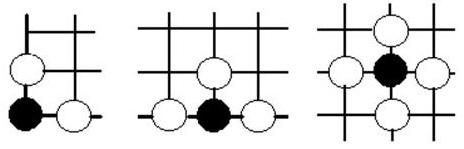 Рис. 10 Рис. 11 Рис. 12 Иная картина снятия камней наблюдается при переносе игры на внеструктурное игровое пространство, то есть на чистый лист бумаги. В качестве камней при этом можно использовать общеизвестные шашки диаметром 30 мм, которые удобнее будет выставлять на игровое пространство в перевёрнутом виде. Для начала условимся, что активное взаимодействие камней в суго (именно так был назван новый вариант игры) начинается только при их касании. Рассмотрим ситуацию снятия одного камня в центре доски:
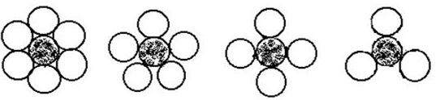 Рис.13 Рис.14 Рис.15 Рис.16 Из плотнейшей упаковки равновеликих кругов следует, что максимальная валентность одного камня в суго равна шести, но для его полной блокады и снятия в центре доски вполне достаточно четыре атакующих камня. Как бы мы ни располагали три атакующих камня, у чёрных будет возможность присоединить ответным ходом к гибнущему камню своего "спасателя" и тем самым создать цепочку из своих пока ещё "живых" камней. Отсюда следует, что в суго валентность камня вовсе не равна количеству камней, необходимых для его снятия, что существенно изменяет рисунок игры. Игроки теперь сами определяют за счёт расположения камней относительно друг друга необходимую валентность – а не структура доски, как это было раньше в го. На периферии игрового пространства (на сторонах и в углах) картина снятия камней, разумеется, выглядит сложнее, что отражено на рис. 17. Первой линией в го является край доски. Расположенные на ней камни трёхвалентны, в углах – двухвалентны, а все камни, расположенные выше первой линии – четырёхвалентны. Что же происходит в суго?
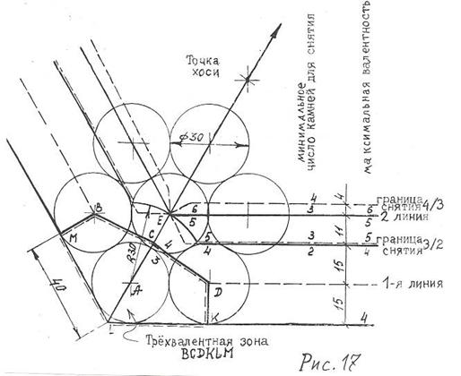 Форма игрового пространства в суго имеет вид правильного шестиугольника с шестью внутренними углами по 120°. Это обусловлено тем, что в прямоугольных углах при игре в суго взаимодействие камней , обладающих повышенной валентностью до шести, будет очень сжато, что не позволит достичь гармоничной игры. Произведём у бортика игрового поля суго плотнейшую упаковку камней, то есть шашек диаметром 30 мм. Центры указанных шашек первого ряда будут лежать на невидимой (виртуальной) первой линии игрового поля на расстоянии 15 мм от бортика. А центры второго ряда шашек в упаковке будут лежать на второй виртуальной линии на расстоянии в 26 мм (точнее – 25,98 мм) от первой линии. И все остальные линии до центра доски будут отстоять друг от друга на 26 мм. Надо ли объяснять, что вместо гексагональной плотнейшей упаковки камней мы не могли применить менее плотную упаковку с тетрагональной решеткой? Ведь в суго камни стремятся занять все свободные ниши. Обратим теперь внимание на правую половину рис. 17. Как мы помним, на стороне камень в суго снимается двумя камнями. Если теперь мы будем его плавно поднимать вверх в сторону центра доски, то мы сначала попадём в зону его снятия тремя – и затем четырьмя камнями. Естественно, игроки хотели бы знать величину этих горизонтальных зон. Как только центр камня пересекает границу такой зоны, камень попадает в другие условия снятия. Из таблицы 13 следует, что граница снятия 3/2 расположена на 1,57-ой дробной линии, а граница снятия 4/3 расположена на 2,15-ой дробной линии игрового поля суго. При этом критическое изменение максимально возможной валентности камней при их движении от бортика к центру доски не всегда совпадает с указанными границами снятия. Например, граница снятия 3/2 совпала с порогом увеличения валентности 5/4, а порог увеличения валентности 6/5 совпал со 2-ой виртуальной линией игрового поля, а не с границей снятия 4/3. Только теперь любознательный читатель может попытаться оценить ситуацию снятия камней в углу игрового поля суго. Проведём биссектрису угла. Продолженные вторые виртуальные линии игрового поля суго с левого и правого бортов доски пересекутся в уникальной точке Е, которую для удобства можно назвать точкой Соль (в честь музыкальной ноты). Совершенно ясно, что через эту точку проходит пороговая граница валентности камней 6/5. Все камни, центры которых будут лежать выше неё, будут шестивалентными. А угловой парадокс состоит в том, что все камни ниже этой точки в углу доски будут не пятивалентными, а четырёхвалентными: пятивалентная зона здесь неожиданно захлопывается согласно приведённой диаграмме. А в самом углу вполне ожидаемо появилась трёхвалентная зона в виде сплюснутого шестиугольника BCDKLM. Что по сути означает резкое поднятие первой виртуальной линии игрового поля из позиции BAD в позицию BCD. Что касается границ снятия, то они тоже схлопываются в точке Соль. Ниже неё для снятия достаточно двух камней, а выше уже нужно 4. Особенностью суго является тот факт, что все описанные зоны на игровом пространстве не нанесены с целью развития весьма высокой пространственной интуиции игроков. Вероятно, их можно было бы обозначить только на учебных досках. При этом учебные камни могли быть выполнены из прозрачного материала с обозначенными центрами. Сравним теперь валентное соотношение игровых пространств го и суго. В го он составляет величины 4, 3, 2 с их пропорциональным отношением 289 : 68 : 4, в суго – 6, 5, 4, 3 с бесконечным пропорциональным отношением.
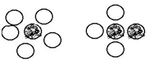 Рис. 18 Рис. 19 (Хотя следует признать, что сами разновалентные зоны, выраженные через их числа, имеют конкретное числовое соотношение). При дальнейшем изучении суго было выявлено, что кроме описанной плотной блокады камней в новой игре существует и дальняя блокада, не требующая их касания. В этих позициях атакующие камни не касаются черного камня, тем не менее их блокада уже завершена – даже в том случае, если последний ход был сделан своим же чёрным камнем. Такое снятие собственных камней называется репрессивным ходом. (С жертвой фигур, чрезвычайно оживляющей игру, в НКС-играх мы уже встречались. Но прямое уничтожение своих фигур видим, пожалуй, впервые. Впрочем, в реальной жизни можно встретить и более жуткие ситуации). Классическое Го (Уэй-чи) в качестве игрового поля имеет правильную линейную четырёхвалентную структуру 10-го уровня. Сумма игровых пунктов такой доски определяется по формуле: Sn = l + 4n (n – l) S10 = l + 4·10(10 – 1) = 361 Следует заметить, что по новейшим данным доска го всё же является точечной структурой. Для гексагональных структур справедлива формула роста: Sn = l + 3n (n – l) Пользуясь этой формулой, мы подобрали схожую по количеству игровых пунктов доску суго. Эта доска в виде правильного шестиугольника является игровым пространством 11-го уровня: S11 = l + 3·ll (ll –l) = 331 Таким образом, мы можем взять за образец правильный шестиугольник, выполненный, например, из деревянных реек сечением 10 х 25 мм с внутренним размером его стороны в 317,2 мм. (При этом, как помнит читатель, внутри этого шестиугольника будет пойманное нами пространство в виде Бездны). Теперь достаточно положить этот ограничитель игрового пространства на ровную плоскость – и можно приступить к игре, которая, без сомнения, занимает среднее положение между Садом камней и Игрой в бисер, объединяя их в единый феномен. Причём не в отвлеченных образах, а в более чем конкретной игре! Каковы же главные особенности такой игры? (См. таблицы 8 и 9). 1. Внеструктурное игровое поле в суго является двумерным, ограниченным, периметрально правильным, моноцветным, однородным, непрерывным, изотропным и ахиральным пространством. 2. Игровое поле в суго является не абстрактным, а реальным физическим пространством. 3. Вероятность первого хода в Го выражалась числовым соотношением 1 : 361. В суго она выражается отношением 1 : ∞ (единица к бесконечности). 4. Игроки в суго сами (своими ходами) определяют в каждой партии оптимальное валентное соотношение камней (и мгновенно возникающих под ними игровых пунктов) в момент выставления камней на игровое пространство. 5. Суго позволяет атаковать камень не с одного-четырёх фиксированных направлений, а в диапазоне 360°, применяя к тому же 2 типа блокады и репрессивные ходы. 6. Суго позволяет строить соединения не только в виде прямоугольных орнаментов, но и в виде свободных гибких структур, как бы взятых из живой природы с любым расстоянием между ними. Если партия в го, сыгранная мастерами, поражала зрителей художественной красотой и раньше, то изобразительные возможности суго позволяют усилить этот эффект, доведя игру до эстетического совершенства. Теперь на игровом пространстве возникли образы драконов, осьминогов и цветущей сакуры. Или гальки в морском прибое, о котором Такубоку сказал:
На песчаном белом берегу Островка В Восточном океане Я, не отирая влажных глаз, С маленьким играю крабом. 7. Новый вариант игры, находясь в рамках основных правил го, требует от игроков ранее недостижимого тончайшего восприятия реального физического пространства и расположенных в нём объектов. 8. В суго игроки не только вступают в игру с самой Геометрией. Их игра наполнена глубоким философским смыслом – как поэма о сотворении Мироздания, о попытке разгадать извечную и самую главную тайну звёздного неба. Продолжая поэтические аналогии, можно привести отрывок из поэмы Лорена Эйсли:
Всем нам необходимо понять, что порядок борется с безграничным хаосом, таящимся у самого хребта мира, содрогающегося в конвульсиях. Временами мне кажется, что и мы выросли как кристаллы на воле, загораясь то тусклым, то рубиновым светом… Но я по природе склонен к глубокой синеве сапфира, отмечающей разум каждого, кто в полном одиночестве познаёт и пытается мысленно охватить усыпанное звёздами пространство и полночь…
(Не могу промолчать о том, что истинная поэзия заключена в языке математических формул. А не в разрекламированных роликах бессодержательной мистики. Там нас просто держит за лохов дружная команда издателей, кинорежиссёров и хозяинов телеканалов, зарабатывающих свои баксы на людском невежестве. – Т.В.)
9. Каждая партия в суго является уникальной и неповторимой. Ведь в суго КАЖДЫЙ ХОД игрок производит в СВОБОДНОЕ ПРОСТРАНСТВО, а не в заранее фиксированную точку игрового поля. При этом, конечно, игрок будет руководствоваться своим и чужим опытом, вспоминая похожие ситуации, но точное повторение прежних позиций будет полностью исключено. Такой особенностью ранее не обладала ни одна из НКС-игр. 10. Игра суго является многократно интуитивной. Интуиция игроку необходима и при выборе расположения камня в каждом ходе, и при выборе тактических или стратегических замыслов, включая интуитивное ощущение свойств реального физического пространства. Впервые суго было описано автором в 1990 году в петербургском сборнике интеллектуальных игр и головоломок (составитель – кандидат физико-математических наук В.Н. Белов) – [25 : 178]. С тех пор прошло 23 года, но уникальная игра оказалась невостребованной. Хотя с другой стороны – чему ж тут удивляться, если мы более двух тысяч лет (!) ничего не хотели знать о существовании не менее прекрасной, но более простой игры Уэй-чи в соседнем Китае. Такой прискорбный факт прежде всего характеризует не саму игру, а нашу интеллектуальную ограниченность и неспособность к всестороннему культурному диалогу с другими цивилизациями. Нет никаких разумных объяснений тому, что мы легко восприняли одну великую восточную игру (шахматы) и почти не воспринимаем ещё более великую восточную игру Го. Автор настоящей работы неоднократно ошибался в том, когда надеялся, что именно профессиональные игроки раньше кого бы то ни было смогут оценить оригинальные идеи, скажем, в сфере шахматного мышления или Го. Ничуть не бывало! В своём большинстве эти зубры смотрели на нарушителя их спокойствия так, как смотрел бы карась из полностью замёрзшего аквариума. Потому что господам рекордсменам важна не сама игра, как самостоятельный феномен, а только их место в этой игре. Поэтому всё "лишнее" они отметают, довольно быстро превращая себя в некое подобие счётных машин. Успокаивает лишь то, что блестящую отповедь таким игрокам дал один из основателей общей теории игр Хёйзинга: он напрочь отказался называть игрой деятельность профессионалов. Увы – это всего лишь работа… (Что для кошки игра – то для мышки работа. – Т.В.) А что будет, если мы решим играть в суго камнями разной формы и разного размера? И, следовательно, перейдём к более обобщённому варианту? Мы получим совершенно неисследованную область игр под названием полисуго. (См. мой российский патент № 1792336 - А3). В "Математических досугах" М. Гарднера (стр. 47) есть информация о поэме "Точный поцелуй" известного химика Фредерика Содди:
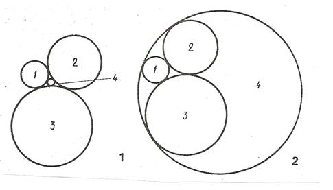 Рис. 20
«Четыре круга как-то раз Поцеловались в поздний час...» А новость состояла в том, что Содди вывел изящную формулу определения радиуса круга, вписанного в пространство между тремя касающимися кругами разного радиуса. Оказывается, что Содди уже играл в полисуго, не подозревая о его существовании! Вполне быть может, что кто-то из молодых математиков продолжит эту игру. Та же игра, переведённая в трёхмерное пространство (стереосуго), уже вплотную приблизится к наукам, изучающим строение вещества на атомарном и молекулярном уровне. Но она будет носить скорее кооперативный, нежели конфликтный характер. Легко понять, что в противном случае Вселенная не состоялась бы. По нашим представлениям Го и суго имеют хорошие перспективы для развития творческих способностей будущих интеллектуалов. Потому что наряду с другими описанными здесь игровыми структурами они являются не только эталоном для строгого описания известных и вновь создаваемых НКС-игр, но и своеобразным прикладным материалом к математической теории структур. Настоящая же глава лишний раз подтверждает, что виртуозно оперировать пустотой нам так же необходимо, как и реальными (или абстрактными) телами и структурами. Итак, кто следующий? Не вижу лес рук.
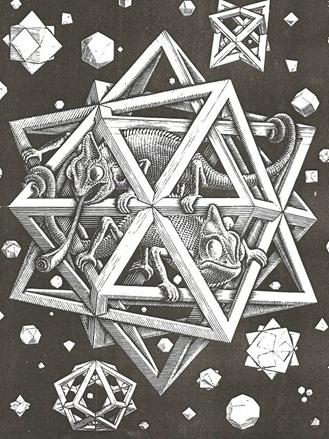 М.К. Эшер. Звёзды. 1948. Резцовая гравюра на дереве. 320 х 260 мм.
Глава 11 ШАШЕЧНЫЕ ИГРОВЫЕ СТРУКТУРЫ Необходимость настоящей книги ещё более очевидна после знакомства с отечественной литературой о шашках, авторы которой всё ещё не в состоянии объяснить ни применяемую ими терминологию, ни противоречия в текстах. К какому классу игр относятся шашки? Какая из игровых структур необходима и достаточна для шашечной игры? Сколько лет существуют русские и похожие на них европейские шашки? Почему русские шашки оказались на шахматной доске? Обратимся к литературе. А. Петров (1827): "Обыкновенная шашечная доска состоит из большого квадрата, разделённого на 64 четвероугольника или клетки, белых и чёрных, или двух других цветов, расположенных так, чтобы клетки, прилежащая одна к другой боками, были всегда разного цвета." Д. Саргин (1915): «О шашечнице. [34 : 318] - §2. Игра идёт на доске, называемой шашечницей. - §3. Шашечница есть прямоугольная плоская доска с равными сторонами, поверхность которой вся разбита на шестьдесят четыре одинаковых равносторонних четырёхугольника, окрашенных в шахмат (т.е. попеременно) в два резко различных между собой цвета. – Примечания: - 1). Размеры шашечницы на практике не выработались и бывают различными. - 2). Светлые и тёмные четырёхугольники шашечницы называются белыми и чёрными клетками или полями.» (Далее он выделяет бортовые, продольные и поперечные "поля", включая последний или крайний ряд клеток, считая от игрока. Чёрные ряды "полей" называет косыми (диагональными) рядами или путями. И даёт определения большой дороге, двойнику, тройнику и косяку... Упоминает о том, что для игры служат только 32 чёрных "поля")... (Эх, пути-дороги через косяки и ухабы ямщицких терминов… – Т.В.) - § 37. «Конечная цель игры заключается в выигрыше партии или приведении её к ничьей. - § 38. Выигрыш партии достигается: 1) взятием всех шашек противника или 2) лишением хода всех остающихся на доске чужих шашек и взятием остальных».
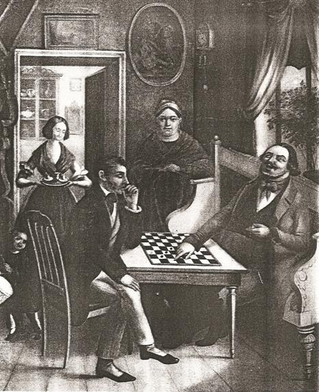
Рис. 21. И.С. Дощеников. Крепостной живописец Строгановых. Игра купца с гостем в шашки. 1840-1850.
В. Голосуев, (СПб) – мастер спорта, неоднократный победитель всесоюзных соревнований (1983): "Русские шашки – спортивная игра (?) между двумя противниками. Один руководит действиями армии (?) из 12 шашек белого цвета, другой – такой же армией, но чёрного цвета. Игровая доска состоит из 64 одинаковых квадратов (полей ) – (?), попеременно окрашенных в светлый и тёмный цвета. Борьба происходит только на 32 тёмных полях… Косые линии, образованные из тёмных полей. принято называть диагоналями." (Спортивная игра двух армий с выносом тел? – Т.В.)
И. Куперман, экс-чемпион мира, Ю. Барский, заслуженный тренер по шашкам (I972): "На стоклеточной доске 50 тёмных и 50 светлых клеток. Тёмные называются полями – на них играют… Линии, которые образуются из полей, называются диагоналями". (Это стул – на нём сидят, это хлеб – его едят…– Т.В.) Среди зарубежных авторов, оставивших заметный след в изучении шашечных игровых структур, следует упомянуть Бек де Фукьера, Э. Тейлора, Антониуса ван дер Линде, Г. Мэррея, Ж. Бойэ, И .Гижицки, К. Круйсвика, А Пиановского, М. Гарднера. А среди отечественных – А. Петрова, М. Гоняева, И. Савенкова, Д. Саргина, П. Бодянского, А. Куличихина, Б. Герцензона, Ю. Филатова, Ю. Авербаха. Заслуживает также внимания серия книг по занимательной математике и настольным играм издательства "МИР" – как и добротная рубрика "Игры разных народов" в журнале "Наука и жизнь" в 60-е и 70-е годы прошлого века. Но общего системного подхода в этом океане информации вы не найдете. Нет даже вразумительного определения шашечной игры. Шашки – это обширный класс настольных комбинационно-стратегических игр с различными целями игры. Подлинно шашечными структурами являются древнейшие точечные, линейные и идентичные им одноцветные плоскофигурные структуры (главным образом – четырёхвалентные). Отличительной особенностью шашечных игр является простота правил, равенство всех фигур (шашек), высокий уровень абстрагированности игры, имитирующей острый конфликт на выживание в борьбе двух или нескольких сторон. Ряд шашечных игр носит ярко выраженный характер топологических задач или комбинаторных головоломок. К шашечным играм относятся: древнейшие по происхождению игры "вперегонки", нардовые игры (кюбейя, плинтион, триктрак), игры облавного типа ("Лиса и гуси"), игры чистого расчёта, имтирующие военное сражение (петтейя, латрункули. европейские шашки), комбинаторные игры и головоломки (крестики-нолики, "Мельница", рэндзю, реверси, "Пустынник"), топологические игры (Уэй-чи, гекс), саморазвивиающиеся игры ("Эволюция") и т.д.
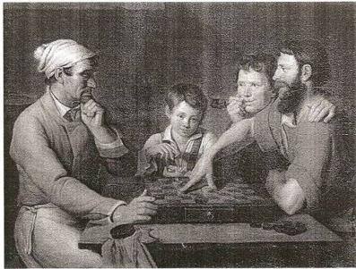 Рис. 22. В.Ф. Грязнов. Повар, играющий в шашки с дворником. 1824. Русские шашки – это европейская шашечная позиционная бескоалиционная игра чистого расчёта, моделирующая военное сражение. Возникла на Руси не ранее 13-го века. Игровым полем русских шашек является двухцветная шахматная доска 8 х 8 квадратных ячеек (клеток) с шахматной нотацией. Игра происходит на половине игровых ячеек (в количестве 32-ух), окрашенных в тёмный цвет. Каждый из двух игроков располагает 12-ю шашками своего цвета, выстраиваемых в 3 ряда на ближайших к игроку тёмных игровых пунктах. Целью игры является "победа в сражении" за счёт уничтожения сил соперника. Выигрышем партии также считается полное запирание шашек соперника в безвыходное положение при отсутствии ходов. (Ну и так далее...) Следует помнить, что шашечные игры зачастую имеют избыточную сложность игровых досок и произвольную терминологию, что значительно затрудняет понимание их конструктивных особенностей. Доска русских шашек, например, легко видоизменяется не только в клеточную одноцветную, но и в линейную. Это говорит о том, что она по своей форме явно избыточна. А в совершенной игре, как мы знаем, не должно быть лишних деталей. Что касается возраста современных европейских шашек на тетрагональной двухцветной доске, то ни историки, ни сами шашисты не имеют единого мнения но этому вопросу. Антониус ван дер Линде: "Шашечная игра появилась в Западной Европе только в 15-16 веках." (См. статью М. Гоняева в "Шахматном листке" № 12 за 1877 год). Ж. Бойэ (1957): "Оформление игры в шашки в том приблизительно виде, какой она имеет сейчас, относится к 13-14 векам.". Д. Саргин (1915): "Мы имеем несомненные доказательства о существовании шашек и раскрашенных шашечниц задолго до нашей эры… Игра в шашки вообще, т.е. игра однообразными фигурками на расчерченной доске, была известна во времена глубочайшей древности, пределов которой даже нельзя определить. По всем вероятиям первоначальные доски были одноцветными с линиями в одну сторону, а позднее и с перекрёстками линий; самыя шашки в древнейших играх не двигались, а лишь выставлялись на избранные места. Поэтому из современных шашечных игр наиболее древними надо признать китайские и японские облавные игры, из коих некоторые, как видно из Гайда, производятся на линейных досках, причём ещё без пересечения линий (?). Следующею ступенью были игры, где шашки в начале выставлялись на места игрою, а затем двигались по линиям. Остатком этих игр является современная "мельница". Затем создались игры, где все шашки выставлялись на доску перед игрою сразу и передвигались по линиям с самого начала партии... Первоначальные игры, надо думать, разыгрывались при посредстве жребия, т.е. метания костей... Игры расчёта появились позднее... Из трёх главнейших, дошедших до нас, игр: нарда, шашек и шахмат, древнейшею надо признать нард, который, как можно судить по греческим текстам, известен был ещё в древнем Египте - как и шашки с обязательным взятием фигур противника. Всего вероятнее, что и эта форма игры была известна ранее в Египте и оттуда перешла в Грецию. Вид её в это время мог быть линейным и лишь позднее перенесен на клетчатую доску (остаток древней формы: шашки туркестанские). Из Греции шашки перешли к древним римлянам, которые знали их задолго до Р.Х. под именем ludus latronum, а затем под именем latrunculi. Позднее игра эта приняла имя dama. Доска в 64 клетки относится к глубокой древности. Её знали уже римляне. Но в Европе доска эта была раскрашеною (?), в Азии же она долго оставалась одноцветною и встречается в этом виде ещё и теперь. Шахматы, попав в Европу, были перенесены (??) на эту доску, положение которой между игроками давно уже установилось в древнеримской игре. Вот почему в средневековой латыни шахматы очень часто именуются ludus latronum, а арабы приписывали знакомство с ними древним грекам и римлянам.". (Смесь прозорливости с наивностью и фанатизмом. До арабских завоеваний Западная Европа не знала ни шахмат, ни шашек на шахматных двухцветных досках. Сами шашки никогда и не нуждались в двухцветных досках с половиной мёртвых ячеек. Да, шашки вообще гораздо древнее шахмат – но не русские шашки на шахматной доске, так горячо любимые российским историком-патриотом Саргиным. – Т.В.) Б. Герцензон, А. Напреенков: «Когда же появилась шашечная игра у русского народа? Учёные считали, что это произошло в конце 10 века. Ведь в старинных рукописях рассказывается, что княгиня Ольга, посетившая в 956 году столицу Византии – Константинополь, привезла на Русь новую шашечную игру. (Т.В.: Какую?). Однако в 1952 году украинские археологи в раскопках на территории совхоза «Переяслав» в Киевской области, в древнем могильном холме нашли комплект русских (?) игральных шашек. Эти раскопки показали, что шашечная игра (Т.В. Какая? Где фотоснимки?) была известна ещё в 4-5 веках нашим предкам – славянам-антам. К 6-му веку относится первое упоминание о народе рус. Торговые связи славян с греками, а также далёкие южные походы не могли не отразиться на обновлении культуры и быта русов. Наверное, тогда и появилась у них шашечная игра." (Не могла не быть? Верх демагогии. – Т.В.) Д. Саргин несомненно является талантливым российским исследователем НКС-игр и выдающимся патриотом русских шашек, но его эмоциональные перехлёсты в поисках истины явно снижают научную ценность его гипотез. Ведь он договорился до того, что шахматы могли воспринять двухцветную доску только от шашек, в то время как они всегда располагали громадным собственным ресурсом для своего развития. Ещё более дикой фантазией является и утверждение, что ладья, слон и ферзь получили своё дальнодействие от дамки русских шашек. Общая шахматная теория, основанная на конструктивной реконструкции, легко справляется с проблемами такого рода: как оказалось, все 70 типов ортодоксальных шахматных структур раскрашиваются ходами невстречающихся слонов. Но (внимание!) при этом не требуется не только каких-то внешних взаимствований, но даже присутствия самого наблюдателя. А дальнодействие ладьи, слона и ферзя зависит только от размеров доски. (То есть всё это и многое другое УЖЕ заложено в объективных законах самой игры. Нам остаётся лишь открыть эти законы). Но Д. Саргин придерживается другого мнения: НИЧЕГО СТОЯЩЕГО НИ САМИ ОБЪЕКТИВНЫЕ ЗАКОНЫ ИГРЫ, НИ ПОЗНАЮЩИЙ ИХ ПЕРВООТКРЫВАТЕЛЬ ДАТЬ НЕ МОГУТ. Его "мудрый историзм" заключается только в том, что все существенное должно быть непременно подсмотрено в другой игре. То есть роль Конструктора и Объективных законов им сведена к нулю. (К сожалению, только этим его вулканическая
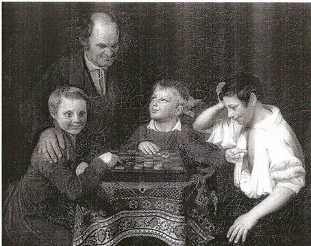 Рис. 23. П.И. Пнин. Игра в шашки. 1824. тенденциозность не ограничивалась. Он был ещё известен и как откровенный шовинист, чем хронически страдало всё российское общество, воспитанное на бредовых идеях Третьего Рима. Из-за которых мы, между прочим, и вляпались в первую мировую войну. Что вместе с не менее бредовой идеей расширить Российскую империю вплоть до Южной Кореи (читайте Николая Второго) и предопределило крах империи. Ленин только подобрал валяющуюся на свалке истории царскую корону.). Что касается возраста русских шашек, то мы имеем две точки зрения. Первая состоит в том, что русские шашки в современном виде не могли возникнуть прежде, чем предки россиян или они сами получили возможность познакомиться с раскрашенной шахматной доской. А шахматная доска была осмыслена как двухцветная в Западной Европе только в 13-м веке, так как других данных у шахматных историков нет. По гипотезе И. Савенкова и И. Линдера предки россиян могли получить шахматную игру непосредственно с Востока торговым путем через низовье Волги не ранее 10-11 века. Вторая (более оптимистическая) точка зрения заключается в том, что древние римляне и даже древние египтяне играли в шашки на уже раскрашенной двухцветной шахматной доске, хотя сами римляне с тех самых пор никак не могут найти у себя указанную доску или хотя бы её вразумительное описание. Но фанатиков это не останавливает. Они убеждены в том, что благодаря своей врожденной любознательности и хорошим торговым связям наши предки могли знать древние римские шашки (латрункули) задолго до нашей эры. И отсюда легко делается вывод, что русские шашки появились в Приднепровье на 500 лет раньше Киевской Руси... и на 150 лет раньше появления самих русов. Нужны ли комментарии? Оказывается, нужны: у "оптимистов" ЕСТЬ ЕЩЁ ОДИН самый последний довод: даже если бы шахмат никогда не было, то кто помешал бы нам раскрасить похожую доску в 2 цвета? В самом деле – никто. Ну тогда предъявите нам эту самую старинную доску (а шахматы были изобретены только в середине первого тысячелетия) или её описание. Но ведь ничего нет вплоть до новейшего времени! Господи, на что я трачу свои силы… С кем спорю? (Именно об этом на моём сайте www.fishka.spb.ru есть большая подборка статей в разделе Наши рецензии. Серьёзным людям не до фишек – вот и выползают кудесники-писатели со своими книгами, переписывая друг у друга тонны чепухи. – Т.В.) В такой ситуации серьёзный исследователь лишь может повторить опыт И. Линдера, крупнейшего отечественного исследователя шахмат со времён Саргина. Исаак Линдер – доктор исторических наук, весьма образованный человек и известный шахматный писатель на нескольких языках, собрал множество фактов, включая данные археологических раскопок. (См. его прекрасно изданную фундаментальную работу "Мир шахматных фигур", М., 1994.) И вот выясняется, что после самых осторожных оценок даты происхождения русских шашек простирается зона догадок и легенд, в которой недостает фактического материала. За что отдельное спасибо великим завоевателям и служителям веры, неоднократно уничтожившим ценнейшие библиотеки и культурные памятники многих цивилизаций. (См.; "Всемирная история" или "Очень большая палата № 6".) Шашечные структуры разнообразны по типу и объёму. Начиная их изучать с самых простейших, мы должны прежде всего упомянуть логический элемент, состоящий из двух точечных СОЭЛ, соединенных "линией связи". Далее расположено однолинейное двухвалентное устройство, посредством которого можно решать большое количество комбинаторных задач и головоломок. Из широко известных шашечных игр на однолинейной структуре на первом месте находится одна из древнейших игр – нарды. Игровое поле этой игры внешне напоминает ярко раскрашенный восточный ковёр, но в функциональном отношении является замкнутой в кольцо линейной структурой с круговым встречным движением шашек по 12-ти знакам Зодиака. Известна также игра-загадка канадского инженера О. Бермана под названием "Болото". По условию задачи на ограниченной с одной стороны однолинейной структуре в произвольном порядке располагается некоторое количество одноцветных шашек. Два игрока, чередуя ходы, передвигают указанные шашки в сторону тупика, ни в коем случае не перепрыгивая через шашки и не снимая их. Проигравшим считается игрок, сделавший последний ход. Существует целое семейство игр, являющихся модификацией известной игры ним. М. Гарднер («Крестики и нолики», М., МИР 1988, с. 196) даёт об этой игре большую статью. Шашечная линейная структура позволяет преобразовать ничем не связанные лунки с камешками в единую систему. При этом кучкам камешков на линейной доске соответствуют пустые игровые пункты между шашками, стоящими на двухвалентной структуре, начиная с самого правого промежутка между шашками – и далее справа налево через один промежуток. Промежутки на этой линейной доске состоят из 3, 4, 0 и 5 пустых игровых пунктов, поэтому данная игра эквивалентна игре в ним с кучками из трёх, четырёх и пяти камешков. Теперь двум игрокам следует делать такие ходы, которые уменьшают сумму камней в кучках до нуля. В такой игре выигрывает тот, кто делает второй ход. Если противник увеличивает количество камней в одной из "кучек", уменьшайте её до прежних размеров, передвигая шашку, которая располагается справа oт "кучки". При вашем ходе вы выигрываете за счёт уменьшения крайней левой "кучки" до нуля. Сотрудники вычислительного центра СПб ГУ А. Аникеич и Г. Григорьев (См. их публикации в журнале "Наука и жизнь" № 12 за 1971 год) предоставили автору этой книги возможность поиграть с их машинными программами в "Болото" и "Калах". Четырёхвалентная линейная структура широко применяется в НКС-играх, включая, разумеется, громадное количество шашечных игр. Примером шестивалентной плоской линейной структуры является топологическая игра гекс, впервые появившаяся в Институте теоретической физики Нильса Бора в Копенгагене. Её придумал датчанин Пит Хейн. Гекс имеет плоскофигурное игровое поле, идентичное шестивалентной линейной сетке. А теперь, выполняя обещанное, мы возвратимся к таблице 4, чтобы дать краткие сведения о трёх моих вариантах трёхмерного Го. Кубическое 5/6-валентное го для трёх игроков под названием "Каркас" можно осуществить на простейшей линейной кубической решётке. Объём игрового поля составит 73 = 343, а количество камней у каждого игрока 343 : 3 = 114. Валентное соотношение игровых пунктов: 6, 5, 4, 3 при их пропорции 125 : 150 : 8. При практическом выполнении игрового комплекта самым доступным способом будет преобразование кубической решётки в двумерный чертёж в виде семицветной решётки в изометрической проекции. При этом нет опасений, что полученное таким способом игровое поле будет слишком большим: его сторона впишется в 110 см при минимальном расстоянии между игровыми пунктами 8 см. Главная новизна кубического го заключается в освоении трёхмерного игрового пространства самой сложной НКС-игрой. (См. рис. 24 и строку 6 табл. 3). Кубическое 5/4-валентное Го для двух игроков под названием "Цапля" можно осуществить на боле сложной трёхмерной решётке с одновременным уменьшением валентности её игровых пунктов, так как при игре вдвоём валентность выше 4-ой недопустима. Суть изменения структуры состоит в том, что вместо сквозных вертикалей в решётке применяются пунктирные вертикали. Крайне важно, что теперь знакомство с объёмной игрой будет доступно двум игрокам. Объём игрового поля остался прежним (343 пункта), а число камней у игроков составит 172 : 171, что довольно близко к привычному стандарту. Валентное соотношение игровых пунктов составит 5, 4, 3, 2 при их пропорции 150 : 145 : 44 : 4 (См. рис. 25 и строку 5 табл. 3). Трёхмерное 4-валентное Го для двух игроков под названием «Пчелиный дом» можно осуществить на объёмной структуре, составленной из семи плоских гексагональных решёток, соединённых пунктирными вертикалями. В итоге мы получим объёмное игровое поле в 371 пункт с очень близкими параметрами к классическому варианту Го. (См. рис. 26 и строку 4 в табл. 3).
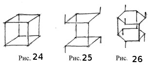 ЗАКЛЮЧЕНИЕ Основным методом исследования в настоящей работе явился разработанный автором структурный анализ игровых пространств в сочетании с признанием решающего значения объективных законов взаимодействия между элементами гармонично сконструированной игры. Тем самым, на наш взгляд, впервые были заложены начала строго научного подхода к изучению НКС-игр как к одному из важнейших элементов Общей теории игр. С практической точки зрения настоящая работа открывает широкие перспективы не только для создания большого количества новых НКС-игр , но и для более эффективного исследования уже известных. В более широком плане ТИС в крайне доступной форме описывает характеристики внеструктурного и структурированного пространства в различных областях знания, включая художественное мышление. В нашем понимании игровое поле (пространство) – это не пассивный объём, не "пустая комната" для помещения в неё Создателем тех или иных фигур с неизвестно откуда взявшимися свойствами. Игровое поле способно и трансформировать себя по геометрическим и физическим законам, и порождать определённые типы "фигур", и определять их свойства. Хотя, разумеется, самоорганизация любого уровня вовсе не исключает на определенной стадии и сознательного конструирования. Игровое пространство в конечном итоге определяет в известной степени и возможный характер взаимодействия между "фигурами", что остроумно показано в книгах Э. Эббота «Флатландия» и Д. Бюргера «Сферлардия» (М, МИР, 1976). Из чего следует, что указанные взаимоотношения отнюдь не носят произвольного характера. Этот факт позволяет глубже осознать неизбежность гармонии в сложных самоорганизующихся системах, включая само мироздание. Что касается самих НКС-игр, то автор предостерёг бы уважаемых коллег от запальчивости. Всё тот же Давыд Саргин с величайшим апломбом заявил: "Доска у шахмат бывала и не в 64 клетки (это правда), и не клеточная, и это не мешало игре оставаться шахматной, взаимоотношения между клетками нет никакого, (?!) что доказывается ходом коня, рокировкою, китайской пушкою; доска никакого осложнения игры и усиления фигур не преднаметила, и развитие игры, равно как создание новых фигур и правил, может произойти на всякой доске – безразлично, клеточной или линейной." В этом запутанном пассаже Д. Саргин хотя и заявил о том, что шахматы содержат в себе громадный нераскрытый потенциал, он совершенно не различает ортодоксальные и сказочные системы, не подозревает о том, что свойства игровых пространств определяют свойства фигур и многие параметры самой игры, не видит полной ошибочности линейных шахматных структур. В другом месте своей книги он явно издевается над Европой, "где тысячи людей занимаются изобретением игр, или, что ещё хуже, если не сказать преступнее (?!) приспособлением игр для обучения". (Откуда такой дремучий апломб? Как удалось средневековью дожить до ХХ века? Не можешь предвидеть развитие общества хотя бы на 30 лет? Ну так не будь смешным. И это пишет наш крупнейший российский исследователь комбинационных игр. Какой позор…– Т.В.) В настоящей работе: - выполнена классификация игровых структур и структурообразующих элементов. - описаны параметры и основные свойства точечных, линейных и плоско-фигурных игровых структур. - определена роль экзофигур и экзотел в реликтовом предэволюционном ряду многоугольников и многогранников. - выявлена связь между свойствами структур и структурообразующих элементов. - составлена Периодическая таблица пространственных структурообразующих элементов и образуемых ими структур, освещены некоторые особенности геометрии игрового пространства. - описаны свойства внеструктурного игрового пространства. - описаны свойства шашечных игровых структур. - разработана методическая база для создания Общей шахматной теории и Общей теории Го (Уэй-чи). Таким образом, теория игровых структур позволила языком математики описать с новых позиций стратегические комбинационные игры высшего класса, показать их неизвестные свойства, подлинный масштаб и закономерности в их возникновении и развитии.
Первое сообщение о проделанной работе было сделано на Федоровской сессии Всероссийского минералогического общества в Санкт-Петербургском государственном горном институте (техническом университете) 26 мая 1993 года. Да, именно там – а не в московской Академии физкультуры и спорта. Когда я принёс туда на шахматную кафедру свою диссертацию «Теория игровых структур и её применение в комбинационных играх высшего класса» (СПб, 1994), впервые излагаемую здесь почти в полном объёме, то ничего внятного в ответ не услышал. Якобы требовалось представление документов о моём предварительном обучении той шахматной премудрости, которую они изучают и преподают вплоть до прохождения аспирантуры. А тут пришёл прораб с улицы и сказал, чтобы они выкинули свою «шахматную науку» на свалку. Собственно говоря, и выкидывать-то особенно было нечего за исключением немногочисленных публикаций по истории шахмат. Ведь никакой российской шахматной науки не существовало. Ибо публикации Авербаха, Линдера и Гика даже не пытались приблизиться к постановке проблемы в общем виде – не говоря уже о её решении.
Возможна ли полноценная шахматная игра за пределами общеизвестной тетрагональной структуры? И сколько таких структур? Чем обусловлена конструкция общеизвестной шахматной игры, свойство её фигур, количество их типов? Могут ли быть другие типы фигур? Возможна ли многосторонняя шахматная игра или игра с одновременным выполнением ходов? Возможны ли нематовые системы игры? Чем вызвана раскраска игрового пространства – и почему только в 2 цвета? А есть ли другие раскраски и во сколько цветов? Была ли шахматная игра создана одним человеком в одном месте – или она является коллективным творчеством многих народов? Связано ли происхождение шахматной игры с мистикой, арифмологией, богоискательством – или это математическая задача? Следует ли изучать шахматы только в ракурсе спортивной рекордомании в исполнении спортивных чиновников и не совсем психически адекватных честолюбцев-чемпионов – или шахматы могут стать весьма эффективным инструментом в сфере познавательных и педагогических технологий? И вопросам нет числа… Но ответы – здесь.
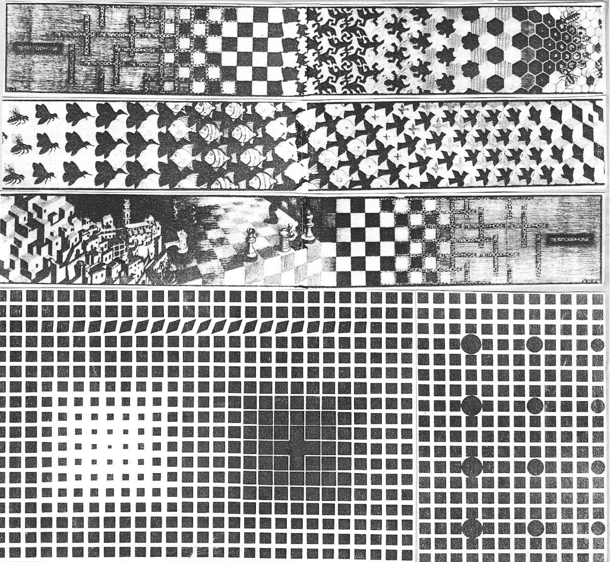
А это мы демонстрируем композицию из Эшера и Вазарелли.
Приложение 1. УСЛОВНЫЕ СОКРАЩЕНИЯ И ФОРМУЛЫ НКС-игры – настольные комбинационно-стратегические игры ТИС – Теория игровых структур СОЭЛ – структурообразующий элемент ОШП – основополагающий шахматный принцип W – игровое поле (пространство) q – игровой пункт n – порядковый номер уровня игрового поля S – сумма всех игровых пунктов игрового пространства, включая уровень "n" Р, m – плоскость симметрии L, N – ось симметрии С, 1 – центр симметрии (В трёх верхних строках первые буквы – символы О.Браве, вторые – символы К.Германа-Шмогена).
[ 1 ] S n = l + 2(n – l) Формула роста однолинейной структуры с нечётным количеством игровых пунктов. [ 2 ] S n = 2 + 2(n – 1) То же – с чётным [ 3 S n = (2n – 1)2 Формула роста диогенной структуры с одноклеточным ядром . [ 4 ] S n [l + 3(n – l)]2 Формула роста триогональной структуры с одноклеточным ядром [ 5 ] S n = [2 + 3(n –1)]2 То же – с многоклеточным треугольным ядром [ 6 ] S n = 6n2 То же – с многоклеточным шестиугольным ядром [ 7 ] S n = 1 + 4n(n – 1) Формула роста тетрагональной структуры с одноклеточным ядром [ 8 ] S n = 4n2 То же – с многоклеточным ядром. [ 9 ] S n = 2(2n – 1)2 Формула роста полуправильной триогональной структуры с многоклеточным ядром [10] S n = 3[1 + 3n(n – 1)] Формула роста ромбоидальной структуры с многоклеточным ядром [11] S n = 4[1 + 2(n – 1)] 2 Формула роста полуправильной пентагональной структуры с многоклеточным ядром [12] S n = l + 3n(n – l) Формула роста гексагональной структуры с одноклеточным ядром [13] S n = 3[1 + Зn(n – 1)] То же – с многоклеточным ядром Таблицы
Основные свойства игровых структур.
Точечные СОЭЛ и образуемые ими структуры. Таблица 1.
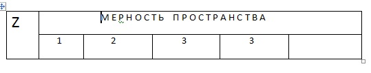
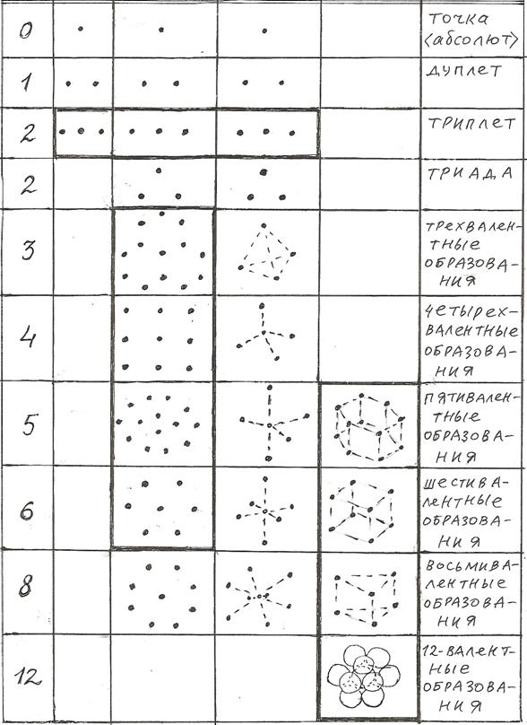
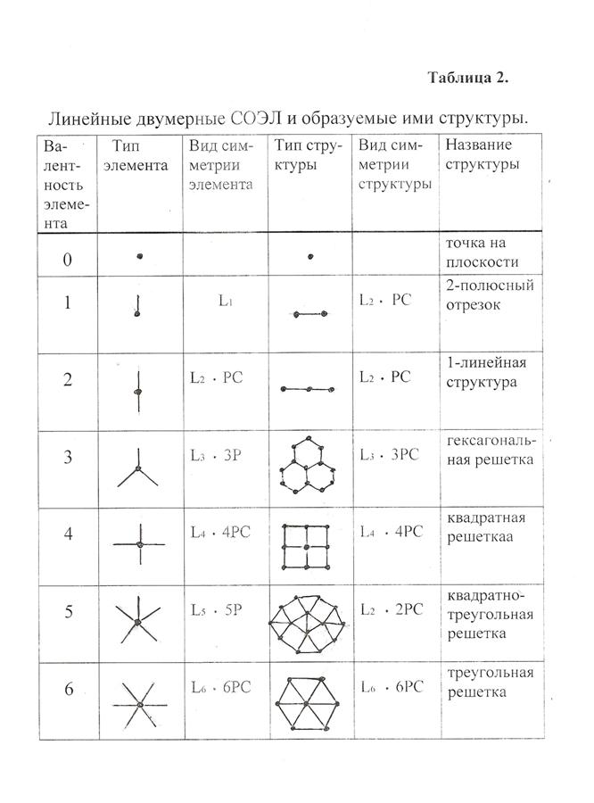 Таблица 3. Линейные трёхмерные СОЭЛ и образуемые ими структуры.
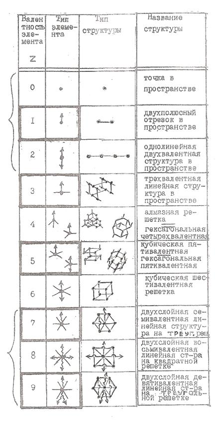
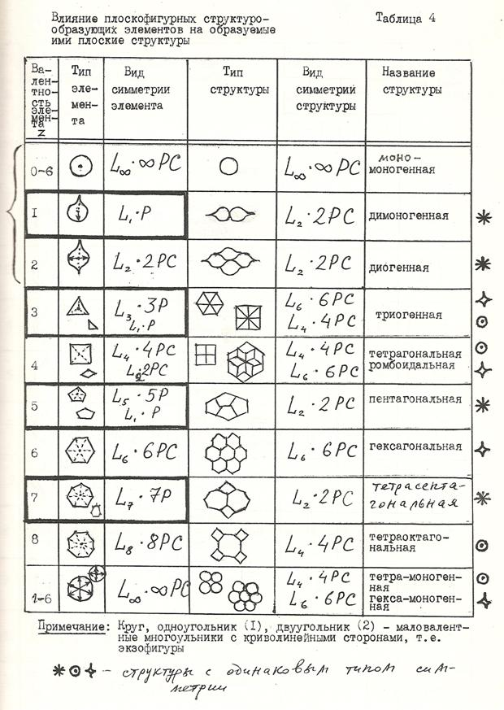 Таблица 5. Маловалентные трёхмерные структурообразующие элементы.
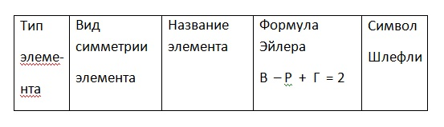
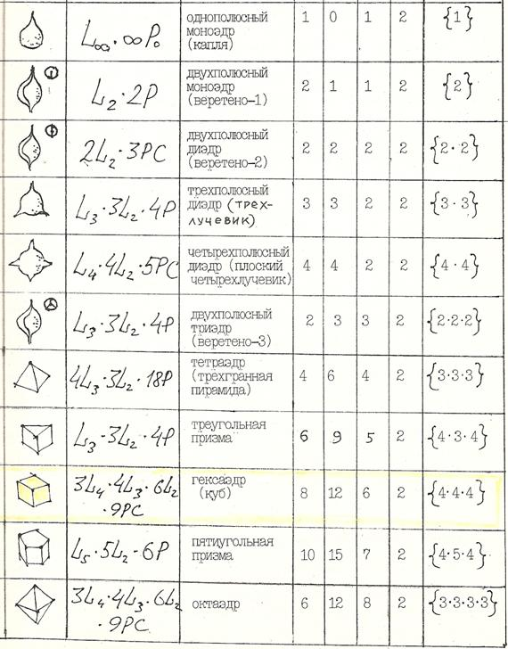
Экзофигуры.
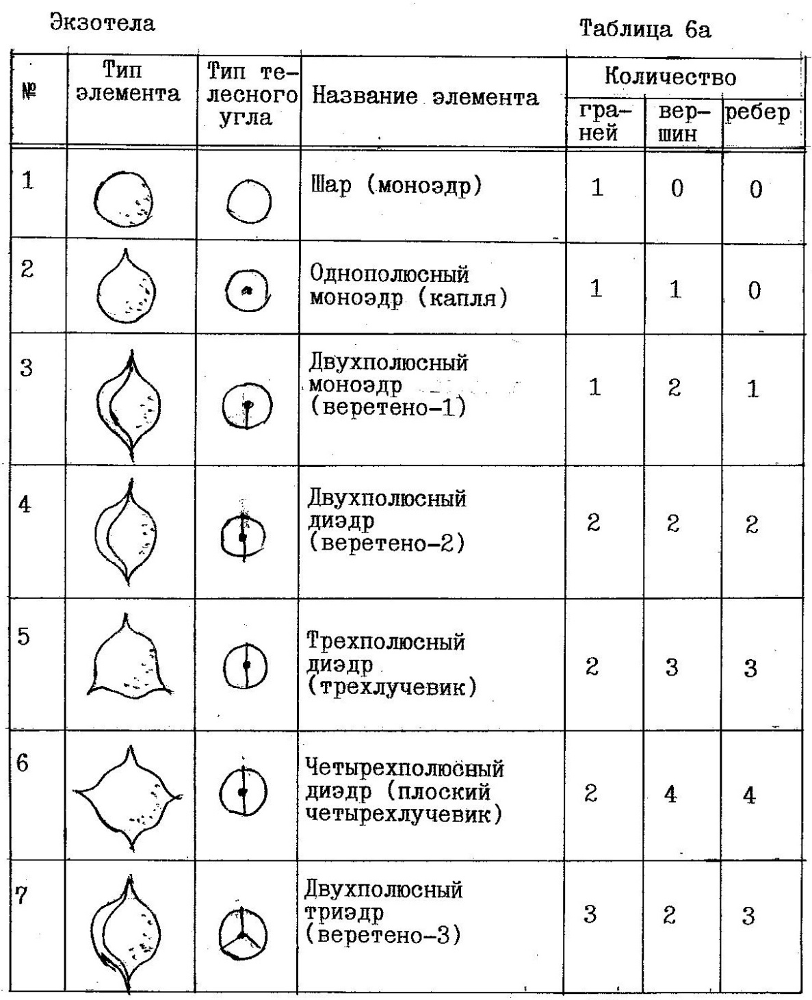 Периодическая таблица структурообразующих элементов (СОЭЛ). Таблица 7.
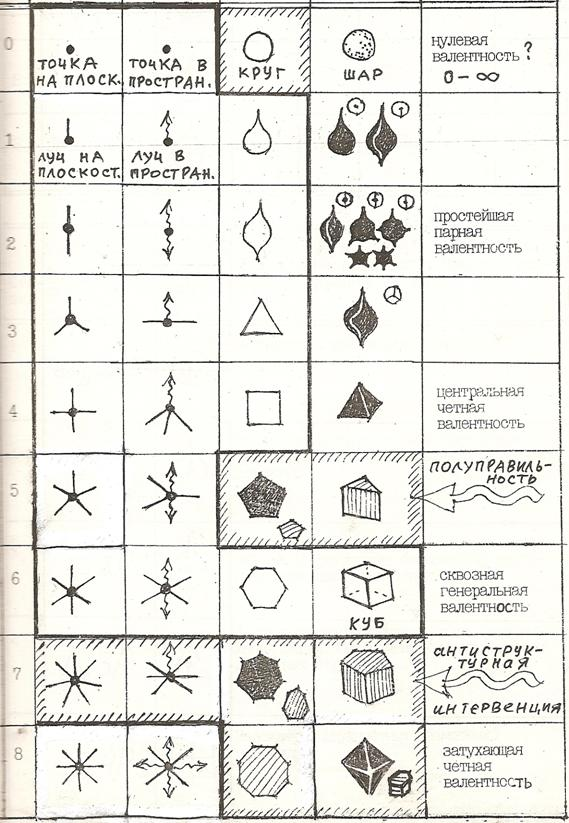
Пояснение к таблице 7. Шесть вертикальных столбцов таблицы обозначают: - номер строки - линейные двухмерные структуры – сети - линейные трёхмерные структуры – каркасы - плоскофигурные двухмерные структуры – мозаики - трёхмерные структуры – многогранники - тип валентности СОЭЛ Валентность СОЭЛ (z) растёт в таблице построчно сверху вниз следующим образом: 0, 1, 2, 3, 4, 5, 6, 7, 8.
Табл. 8. Параметры игрового поля го.
Табл. 9. Параметры игрового поля суго.
Пояснения к таблицам 8, 9: n – количество уровней, растущих по слоям игровых структур с одноэлементным ядром. r – количество игровых пунктов (или камней) в каждом наращиваемом слое. t – количество игровых пунктов(или камней), умещающихся на одной стороне поля. Sn – сумма игровых пунктов (или сумма камней при плотной упаковке), включая все уровни от 1 до n.
Табл. 11. Периферийные эффекты
взаимодействия камней в го. 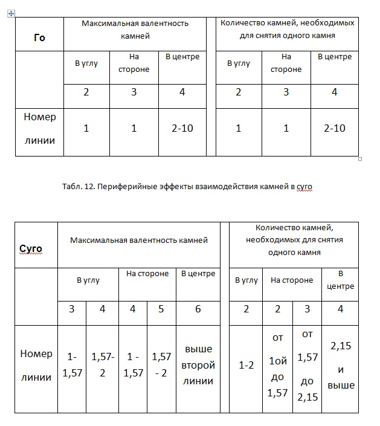 Табл. 13. Валентное соотношение игровых пунктов в играх типа го.
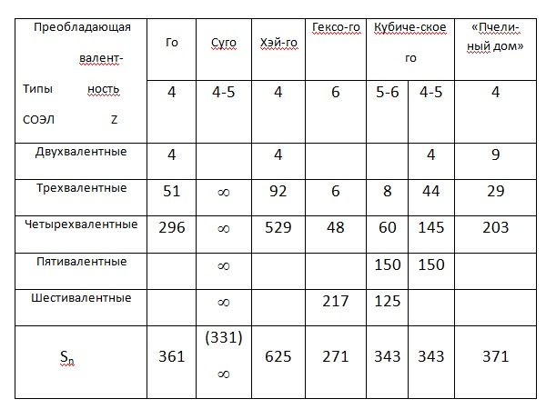 ЛИТЕРАТУРА 1. Авербах Ю.Л. В поисках истины. – М., ФиС, 1992, 240с. 2. Асташкин В.А., Нилов Г.И. Школа го. // "Наука и жизнь", 1975-1976 гг. 3. Бойэ Ж. Откуда произошли шашки. // "64", 1971, №6, стр. 12 – сокращенный перевод из журнала "В защиту мира" за 1957 г. 4. Вейль Г. Симметрия. – М., Наука, 1968, 192с. 5. Венниджер М. Модели многогранников. – М., Мир, 1974. 6. Галиулин Р.В. Кристаллографическая геометрия. – М., Наука, 1984. 7. Галиулин Р.В. Лекции по геометрическим основам кристаллографии. – Челябинский госуниверситет, 1989. 8. Гарднер М. Этот правый, левый мир. – М., Мир, 1967. 9. Гарднер М. Математические головоломки и развлечения. – М., Мир, 1971, 510с. 10. Гарднер М. Математические досуги. – М., Мир, 1972. 11. Гарднер М. Математические новеллы. – М., Мир, 1974. 12. Гарднер М. Крестики-нолики. – М., Мир, 1988. 13. Гарднер М. Путешествие во времени. – М., Мир, 1990. 14. Герцензон Б., Напреенков А. Шашки – это интересно! – СПб, Литера, 1997. 15. Гик Е.Я. Математика на шахматной доске. – М., Наука, 1976. 16. Гик Е.Я. Шахматы и математика. – М., Наука, 1983. 17. Голосуев В.М. Играйте в шашки! – Л., Лениздат, 1983. 18. Гоняев М.К. Наброски о шашках. // «Шахматный листок» М.Чигорина, 1877, № 1-11/12, Т2. 19. Городецкий В.Б. Шашки. // Игры и развлечения. – М., Молодая гвардия, 1990, том 2. 20. Данилов Ю.А., Смородинский Я.А. Иоганн Кеплер от «Мистерии» до «Гармонии» //УФН (1973), №109, вып.1. 21. Делоне Б.Н. О правильных разбиениях пространств. // «Природа», 1963, №2. 22. Дельгадо О., Хьюсон Д., Заморзаева Е. Классификация 2- изовариантных мозаичных размещений поверхности. – Препринт, 1990. 23. Жмудь Л.Я. Пифагор и его школа. – Л., Наука, 1990. 24. Игра? Игра! (составитель В.Н. Белов) – Л., Лениздат, 1987. 25. Калейдоскоп игр (составитель В.Н. Белов) – Л., Лениздат, 1990. 26. Кандинский В. Точка и линия на плоскости. – СПб., Азбука, 2001, 560 с. 27. Кеплер И. О шестиугольных снежинках. – М., Наука, 1982. 28. Куличихин А.И. История развития русских шашек. – М., ФиС,1982. 29. Куперман И.И., Барский Ю.П. Как играют в стоклеточные шашки. – М., ФиС, 1972. 30. Левитин К.Е. Геометрическая рапсодия. – М., Знание, 1984. 31. Математический цветник (сотавитель Д.А. Кларнер) – М., Мир, 1983. 32. Пидоу Д. Геометрия и искусство. (пер. Ю.А. Данилова) – М., Мир, 1979, 333 с. 33. Петров А.Д. Руководство к основательному познанию шашечной игры, или Искусство обыгрывать всех в простые шашки. – СПб.-1827. 34. Саргин Д.И. Древность игр в шашки и шахматы.– М., Сергиев Посад, тип. И.Иванова, 1915. 35. Thiele, Haas К. Tcufelsspielle – Lepzig, lena, Berlin, Urania-Verlag, 1988. 36. Узоры симметрии. – М., Мир, 1980 37. Филатов Ю.П. Какой дан вам дан? // «Знание - сила», 1974, № 11 38. Филонов П. Аналитическое искусство. – СХ, 1990. 39. Франк-Каменецкий В.А., Дубов П.Л., ШафрановскиЙ И.И. Классическая симметрия. – Л., ЛГУ, 1984. 40. Хёйзинга И. HOMO LUDENS – М., Прогресс, 1992 41. Шаскольская М.П. Очерки о свойствах кристаллов. – М., Наука, 1978 42. Шаттшнейдер Д. Хвала любителям! // Математический цветник. (составитель Д.А. Кларнер) – М., Мир, 1983. 43. ШафрановскиЙ И.И. Симметрия в природе. – Л., Недра, 1968. 44. ШафрановскиЙ И.И. Кристаллографические представления И. Кеплера и его трактат «О шестиугольном снеге» – М., 1971. 45. ШАШКИ. Журнал П.Н. Бодянского. 1897-1901. 46. ШАХМАТЫ. Энциклопедический словарь. – М., СЭ, 1990. 47. Шубников А.В. О сочетаниях правильных систем фигур на плоскости. //1 – Изв. АН СССР, 6-я серия, 1926, 20, 1171-1180 II – Изв. АН СССР, 6-я серия, 1927, 21, 177-184. 48. Шубников А.В. О работах Пьера Кюри в области симметрии. // Успехи физических наук, том 59, вып.4, 1956. 49. Эббот Э. Флатландия., Бюргер Д. Сферляндия. (пер. Ю.А. Данилова) – М., Мир, 1976, 360 с. Примечание автора:
По
сути – это ведь ни что иное, как Геометрическая поэма,
навеянная золотым соцветием гениев великой науки Геометрии…
Боюсь обидеть в перечне кого-то из них… Но уж как тут без
Лобачевского, Фёдорова, Вейля, Эшера… Именно Вейль
подсказал мне простую, но очень эффективную методику. В локальном
объекте можно обнаружить основополагающий принцип. Затем берётся
весьма расширенная база схожих объектов или процессов и с помощью
указанного принципа обрабатывается на предмет выявления полного
масштаба изучаемого явления. Потом мы возвращаемся к источнику и
легко видим его ущербность, поскольку первая модель была выбрана
стихийно – а авторы в придачу не могли знать простых вещей
из анализа большой группы явлений. |
|
|
|